<!doctype html>
<html lang="en" class="no-js">
  <head>
    
      <meta charset="utf-8">
      <meta name="viewport" content="width=device-width,initial-scale=1">
      
      
      
      <link rel="shortcut icon" href="../../assets/images/favicon.png">
      <meta name="generator" content="mkdocs-1.1.2, mkdocs-material-5.2.3">
    
    
      
        <title>Faster RCNN案例 - 深度学习与CV</title>
      
    
    
      <link rel="stylesheet" href="../../assets/stylesheets/main.6e35a1a6.min.css">
      
      
    
    
    
      
        <link href="https://fonts.gstatic.com" rel="preconnect" crossorigin>
        <link rel="stylesheet" href="https://fonts.googleapis.com/css?family=Roboto:300,400,400i,700%7CRoboto+Mono&display=fallback">
        <style>body,input{font-family:"Roboto",-apple-system,BlinkMacSystemFont,Helvetica,Arial,sans-serif}code,kbd,pre{font-family:"Roboto Mono",SFMono-Regular,Consolas,Menlo,monospace}</style>
      
    
    
    
    
      
    
    
  </head>
  
  
    <body dir="ltr">
  
    <input class="md-toggle" data-md-toggle="drawer" type="checkbox" id="__drawer" autocomplete="off">
    <input class="md-toggle" data-md-toggle="search" type="checkbox" id="__search" autocomplete="off">
    <label class="md-overlay" for="__drawer"></label>
    <div data-md-component="skip">
      
        
        <a href="#43-faster-rcnn" class="md-skip">
          Skip to content
        </a>
      
    </div>
    <div data-md-component="announce">
      
    </div>
    
      <header class="md-header" data-md-component="header">
  <nav class="md-header-nav md-grid" aria-label="Header">
    <a href="../.." title="深度学习与CV" class="md-header-nav__button md-logo" aria-label="深度学习与CV">
      
  
  <svg xmlns="http://www.w3.org/2000/svg" viewBox="0 0 24 24"><path d="M12 8a3 3 0 003-3 3 3 0 00-3-3 3 3 0 00-3 3 3 3 0 003 3m0 3.54C9.64 9.35 6.5 8 3 8v11c3.5 0 6.64 1.35 9 3.54 2.36-2.19 5.5-3.54 9-3.54V8c-3.5 0-6.64 1.35-9 3.54z"/></svg>

    </a>
    <label class="md-header-nav__button md-icon" for="__drawer">
      <svg xmlns="http://www.w3.org/2000/svg" viewBox="0 0 24 24"><path d="M3 6h18v2H3V6m0 5h18v2H3v-2m0 5h18v2H3v-2z"/></svg>
    </label>
    <div class="md-header-nav__title" data-md-component="header-title">
      
        <div class="md-header-nav__ellipsis">
          <span class="md-header-nav__topic md-ellipsis">
            深度学习与CV
          </span>
          <span class="md-header-nav__topic md-ellipsis">
            
              Faster RCNN案例
            
          </span>
        </div>
      
    </div>
    
      <label class="md-header-nav__button md-icon" for="__search">
        <svg xmlns="http://www.w3.org/2000/svg" viewBox="0 0 24 24"><path d="M9.5 3A6.5 6.5 0 0116 9.5c0 1.61-.59 3.09-1.56 4.23l.27.27h.79l5 5-1.5 1.5-5-5v-.79l-.27-.27A6.516 6.516 0 019.5 16 6.5 6.5 0 013 9.5 6.5 6.5 0 019.5 3m0 2C7 5 5 7 5 9.5S7 14 9.5 14 14 12 14 9.5 12 5 9.5 5z"/></svg>
      </label>
      
<div class="md-search" data-md-component="search" role="dialog">
  <label class="md-search__overlay" for="__search"></label>
  <div class="md-search__inner" role="search">
    <form class="md-search__form" name="search">
      <input type="text" class="md-search__input" name="query" aria-label="Search" placeholder="Search" autocapitalize="off" autocorrect="off" autocomplete="off" spellcheck="false" data-md-component="search-query" data-md-state="active">
      <label class="md-search__icon md-icon" for="__search">
        <svg xmlns="http://www.w3.org/2000/svg" viewBox="0 0 24 24"><path d="M9.5 3A6.5 6.5 0 0116 9.5c0 1.61-.59 3.09-1.56 4.23l.27.27h.79l5 5-1.5 1.5-5-5v-.79l-.27-.27A6.516 6.516 0 019.5 16 6.5 6.5 0 013 9.5 6.5 6.5 0 019.5 3m0 2C7 5 5 7 5 9.5S7 14 9.5 14 14 12 14 9.5 12 5 9.5 5z"/></svg>
        <svg xmlns="http://www.w3.org/2000/svg" viewBox="0 0 24 24"><path d="M20 11v2H8l5.5 5.5-1.42 1.42L4.16 12l7.92-7.92L13.5 5.5 8 11h12z"/></svg>
      </label>
      <button type="reset" class="md-search__icon md-icon" aria-label="Clear" data-md-component="search-reset" tabindex="-1">
        <svg xmlns="http://www.w3.org/2000/svg" viewBox="0 0 24 24"><path d="M19 6.41L17.59 5 12 10.59 6.41 5 5 6.41 10.59 12 5 17.59 6.41 19 12 13.41 17.59 19 19 17.59 13.41 12 19 6.41z"/></svg>
      </button>
    </form>
    <div class="md-search__output">
      <div class="md-search__scrollwrap" data-md-scrollfix>
        <div class="md-search-result" data-md-component="search-result">
          <div class="md-search-result__meta">
            Initializing search
          </div>
          <ol class="md-search-result__list"></ol>
        </div>
      </div>
    </div>
  </div>
</div>
    
    
  </nav>
</header>
    
    <div class="md-container" data-md-component="container">
      
        
      
      
        
      
      <main class="md-main" data-md-component="main">
        <div class="md-main__inner md-grid">
          
            
              <div class="md-sidebar md-sidebar--primary" data-md-component="navigation">
                <div class="md-sidebar__scrollwrap">
                  <div class="md-sidebar__inner">
                    <nav class="md-nav md-nav--primary" aria-label="Navigation" data-md-level="0">
  <label class="md-nav__title" for="__drawer">
    <a href="../.." title="深度学习与CV" class="md-nav__button md-logo" aria-label="深度学习与CV">
      
  
  <svg xmlns="http://www.w3.org/2000/svg" viewBox="0 0 24 24"><path d="M12 8a3 3 0 003-3 3 3 0 00-3-3 3 3 0 00-3 3 3 3 0 003 3m0 3.54C9.64 9.35 6.5 8 3 8v11c3.5 0 6.64 1.35 9 3.54 2.36-2.19 5.5-3.54 9-3.54V8c-3.5 0-6.64 1.35-9 3.54z"/></svg>

    </a>
    深度学习与CV
  </label>
  
  <ul class="md-nav__list" data-md-scrollfix>
    
      
      
      


  <li class="md-nav__item md-nav__item--nested">
    
      <input class="md-nav__toggle md-toggle" data-md-toggle="nav-1" type="checkbox" id="nav-1">
    
    <label class="md-nav__link" for="nav-1">
      课程介绍
      <span class="md-nav__icon md-icon">
        <svg xmlns="http://www.w3.org/2000/svg" viewBox="0 0 24 24"><path d="M8.59 16.58L13.17 12 8.59 7.41 10 6l6 6-6 6-1.41-1.42z"/></svg>
      </span>
    </label>
    <nav class="md-nav" aria-label="课程介绍" data-md-level="1">
      <label class="md-nav__title" for="nav-1">
        <span class="md-nav__icon md-icon">
          <svg xmlns="http://www.w3.org/2000/svg" viewBox="0 0 24 24"><path d="M20 11v2H8l5.5 5.5-1.42 1.42L4.16 12l7.92-7.92L13.5 5.5 8 11h12z"/></svg>
        </span>
        课程介绍
      </label>
      <ul class="md-nav__list" data-md-scrollfix>
        
        
          
          
          


  <li class="md-nav__item">
    <a href="../../introduction/section1/" title="深度学习" class="md-nav__link">
      深度学习
    </a>
  </li>

        
          
          
          


  <li class="md-nav__item">
    <a href="../../introduction/section2/" title="计算机视觉（CV）" class="md-nav__link">
      计算机视觉（CV）
    </a>
  </li>

        
      </ul>
    </nav>
  </li>

    
      
      
      


  <li class="md-nav__item md-nav__item--nested">
    
      <input class="md-nav__toggle md-toggle" data-md-toggle="nav-2" type="checkbox" id="nav-2">
    
    <label class="md-nav__link" for="nav-2">
      tensorflow入门
      <span class="md-nav__icon md-icon">
        <svg xmlns="http://www.w3.org/2000/svg" viewBox="0 0 24 24"><path d="M8.59 16.58L13.17 12 8.59 7.41 10 6l6 6-6 6-1.41-1.42z"/></svg>
      </span>
    </label>
    <nav class="md-nav" aria-label="tensorflow入门" data-md-level="1">
      <label class="md-nav__title" for="nav-2">
        <span class="md-nav__icon md-icon">
          <svg xmlns="http://www.w3.org/2000/svg" viewBox="0 0 24 24"><path d="M20 11v2H8l5.5 5.5-1.42 1.42L4.16 12l7.92-7.92L13.5 5.5 8 11h12z"/></svg>
        </span>
        tensorflow入门
      </label>
      <ul class="md-nav__list" data-md-scrollfix>
        
        
          
          
          


  <li class="md-nav__item">
    <a href="../../tensorFlow/section1/" title="tensorflow和keras简介" class="md-nav__link">
      tensorflow和keras简介
    </a>
  </li>

        
          
          
          


  <li class="md-nav__item">
    <a href="../../tensorFlow/section2/" title="快速入门模型" class="md-nav__link">
      快速入门模型
    </a>
  </li>

        
      </ul>
    </nav>
  </li>

    
      
      
      


  <li class="md-nav__item md-nav__item--nested">
    
      <input class="md-nav__toggle md-toggle" data-md-toggle="nav-3" type="checkbox" id="nav-3">
    
    <label class="md-nav__link" for="nav-3">
      深度神经网络
      <span class="md-nav__icon md-icon">
        <svg xmlns="http://www.w3.org/2000/svg" viewBox="0 0 24 24"><path d="M8.59 16.58L13.17 12 8.59 7.41 10 6l6 6-6 6-1.41-1.42z"/></svg>
      </span>
    </label>
    <nav class="md-nav" aria-label="深度神经网络" data-md-level="1">
      <label class="md-nav__title" for="nav-3">
        <span class="md-nav__icon md-icon">
          <svg xmlns="http://www.w3.org/2000/svg" viewBox="0 0 24 24"><path d="M20 11v2H8l5.5 5.5-1.42 1.42L4.16 12l7.92-7.92L13.5 5.5 8 11h12z"/></svg>
        </span>
        深度神经网络
      </label>
      <ul class="md-nav__list" data-md-scrollfix>
        
        
          
          
          


  <li class="md-nav__item">
    <a href="../../deeplearning/section1/" title="神经网络简介" class="md-nav__link">
      神经网络简介
    </a>
  </li>

        
          
          
          


  <li class="md-nav__item">
    <a href="../../deeplearning/section2/" title="常见的损失函数" class="md-nav__link">
      常见的损失函数
    </a>
  </li>

        
          
          
          


  <li class="md-nav__item">
    <a href="../../deeplearning/section3/" title="深度学习的优化方法" class="md-nav__link">
      深度学习的优化方法
    </a>
  </li>

        
          
          
          


  <li class="md-nav__item">
    <a href="../../deeplearning/section4/" title="深度学习的正则化" class="md-nav__link">
      深度学习的正则化
    </a>
  </li>

        
          
          
          


  <li class="md-nav__item">
    <a href="../../deeplearning/section5/" title="神经网络案例" class="md-nav__link">
      神经网络案例
    </a>
  </li>

        
          
          
          


  <li class="md-nav__item">
    <a href="../../deeplearning/section6/" title="卷积神经网络CNN" class="md-nav__link">
      卷积神经网络CNN
    </a>
  </li>

        
      </ul>
    </nav>
  </li>

    
      
      
      


  <li class="md-nav__item md-nav__item--nested">
    
      <input class="md-nav__toggle md-toggle" data-md-toggle="nav-4" type="checkbox" id="nav-4">
    
    <label class="md-nav__link" for="nav-4">
      图像分类
      <span class="md-nav__icon md-icon">
        <svg xmlns="http://www.w3.org/2000/svg" viewBox="0 0 24 24"><path d="M8.59 16.58L13.17 12 8.59 7.41 10 6l6 6-6 6-1.41-1.42z"/></svg>
      </span>
    </label>
    <nav class="md-nav" aria-label="图像分类" data-md-level="1">
      <label class="md-nav__title" for="nav-4">
        <span class="md-nav__icon md-icon">
          <svg xmlns="http://www.w3.org/2000/svg" viewBox="0 0 24 24"><path d="M20 11v2H8l5.5 5.5-1.42 1.42L4.16 12l7.92-7.92L13.5 5.5 8 11h12z"/></svg>
        </span>
        图像分类
      </label>
      <ul class="md-nav__list" data-md-scrollfix>
        
        
          
          
          


  <li class="md-nav__item">
    <a href="../../imageClassification/section1/" title="图像分类简介" class="md-nav__link">
      图像分类简介
    </a>
  </li>

        
          
          
          


  <li class="md-nav__item">
    <a href="../../imageClassification/section2/" title="AlexNet" class="md-nav__link">
      AlexNet
    </a>
  </li>

        
          
          
          


  <li class="md-nav__item">
    <a href="../../imageClassification/section3/" title="VGG" class="md-nav__link">
      VGG
    </a>
  </li>

        
          
          
          


  <li class="md-nav__item">
    <a href="../../imageClassification/section4/" title="GoogLeNet" class="md-nav__link">
      GoogLeNet
    </a>
  </li>

        
          
          
          


  <li class="md-nav__item">
    <a href="../../imageClassification/section5/" title="ResNet" class="md-nav__link">
      ResNet
    </a>
  </li>

        
          
          
          


  <li class="md-nav__item">
    <a href="../../imageClassification/section6/" title="图像增强方法" class="md-nav__link">
      图像增强方法
    </a>
  </li>

        
          
          
          


  <li class="md-nav__item">
    <a href="../../imageClassification/section7/" title="模型微调" class="md-nav__link">
      模型微调
    </a>
  </li>

        
      </ul>
    </nav>
  </li>

    
      
      
      

  


  <li class="md-nav__item md-nav__item--active md-nav__item--nested">
    
      <input class="md-nav__toggle md-toggle" data-md-toggle="nav-5" type="checkbox" id="nav-5" checked>
    
    <label class="md-nav__link" for="nav-5">
      目标检测
      <span class="md-nav__icon md-icon">
        <svg xmlns="http://www.w3.org/2000/svg" viewBox="0 0 24 24"><path d="M8.59 16.58L13.17 12 8.59 7.41 10 6l6 6-6 6-1.41-1.42z"/></svg>
      </span>
    </label>
    <nav class="md-nav" aria-label="目标检测" data-md-level="1">
      <label class="md-nav__title" for="nav-5">
        <span class="md-nav__icon md-icon">
          <svg xmlns="http://www.w3.org/2000/svg" viewBox="0 0 24 24"><path d="M20 11v2H8l5.5 5.5-1.42 1.42L4.16 12l7.92-7.92L13.5 5.5 8 11h12z"/></svg>
        </span>
        目标检测
      </label>
      <ul class="md-nav__list" data-md-scrollfix>
        
        
          
          
          


  <li class="md-nav__item">
    <a href="../01.overview/" title="目标检测概述" class="md-nav__link">
      目标检测概述
    </a>
  </li>

        
          
          
          


  <li class="md-nav__item">
    <a href="../02.RCNN/" title="RCNN系列网络" class="md-nav__link">
      RCNN系列网络
    </a>
  </li>

        
          
          
          

  


  <li class="md-nav__item md-nav__item--active">
    
    <input class="md-nav__toggle md-toggle" data-md-toggle="toc" type="checkbox" id="__toc">
    
      
    
    
      <label class="md-nav__link md-nav__link--active" for="__toc">
        Faster RCNN案例
        <span class="md-nav__icon md-icon">
          <svg xmlns="http://www.w3.org/2000/svg" viewBox="0 0 24 24"><path d="M3 9h14V7H3v2m0 4h14v-2H3v2m0 4h14v-2H3v2m16 0h2v-2h-2v2m0-10v2h2V7h-2m0 6h2v-2h-2v2z"/></svg>
        </span>
      </label>
    
    <a href="./" title="Faster RCNN案例" class="md-nav__link md-nav__link--active">
      Faster RCNN案例
    </a>
    
      
<nav class="md-nav md-nav--secondary" aria-label="Table of contents">
  
  
    
  
  
    <label class="md-nav__title" for="__toc">
      <span class="md-nav__icon md-icon">
        <svg xmlns="http://www.w3.org/2000/svg" viewBox="0 0 24 24"><path d="M20 11v2H8l5.5 5.5-1.42 1.42L4.16 12l7.92-7.92L13.5 5.5 8 11h12z"/></svg>
      </span>
      Table of contents
    </label>
    <ul class="md-nav__list" data-md-scrollfix>
      
        <li class="md-nav__item">
  <a href="#1-voc" class="md-nav__link">
    1. VOC数据集简介
  </a>
  
    <nav class="md-nav" aria-label="1. VOC数据集简介">
      <ul class="md-nav__list">
        
          <li class="md-nav__item">
  <a href="#11" class="md-nav__link">
    1.1 数据情况
  </a>
  
</li>
        
          <li class="md-nav__item">
  <a href="#12" class="md-nav__link">
    1.2 标注信息
  </a>
  
</li>
        
      </ul>
    </nav>
  
</li>
      
        <li class="md-nav__item">
  <a href="#2" class="md-nav__link">
    2 数据集解析
  </a>
  
    <nav class="md-nav" aria-label="2 数据集解析">
      <ul class="md-nav__list">
        
          <li class="md-nav__item">
  <a href="#21" class="md-nav__link">
    2.1 指定数据集
  </a>
  
</li>
        
          <li class="md-nav__item">
  <a href="#22" class="md-nav__link">
    2.2图像读取
  </a>
  
</li>
        
          <li class="md-nav__item">
  <a href="#23" class="md-nav__link">
    2.3 标准信息的读取
  </a>
  
</li>
        
          <li class="md-nav__item">
  <a href="#24" class="md-nav__link">
    2.4 图像的大小处理
  </a>
  
</li>
        
          <li class="md-nav__item">
  <a href="#25" class="md-nav__link">
    2.5 构建数据读取的类
  </a>
  
</li>
        
          <li class="md-nav__item">
  <a href="#26" class="md-nav__link">
    2.6 数据解析类演示
  </a>
  
</li>
        
      </ul>
    </nav>
  
</li>
      
        <li class="md-nav__item">
  <a href="#3" class="md-nav__link">
    3.模型训练
  </a>
  
</li>
      
        <li class="md-nav__item">
  <a href="#4" class="md-nav__link">
    4.模型测试
  </a>
  
    <nav class="md-nav" aria-label="4.模型测试">
      <ul class="md-nav__list">
        
          <li class="md-nav__item">
  <a href="#41" class="md-nav__link">
    4.1 数据和模型加载
  </a>
  
</li>
        
          <li class="md-nav__item">
  <a href="#42-rpn" class="md-nav__link">
    4.2 RPN网络
  </a>
  
    <nav class="md-nav" aria-label="4.2 RPN网络">
      <ul class="md-nav__list">
        
          <li class="md-nav__item">
  <a href="#421-rpn" class="md-nav__link">
    4.2.1 RPN的目标值
  </a>
  
</li>
        
          <li class="md-nav__item">
  <a href="#422-rpn" class="md-nav__link">
    4.2.2 RPN的预测结果
  </a>
  
</li>
        
      </ul>
    </nav>
  
</li>
        
          <li class="md-nav__item">
  <a href="#43-fastrcnn" class="md-nav__link">
    4.3 fastRCNN网络
  </a>
  
</li>
        
          <li class="md-nav__item">
  <a href="#44" class="md-nav__link">
    4.4 目标检测
  </a>
  
</li>
        
      </ul>
    </nav>
  
</li>
      
    </ul>
  
</nav>
    
  </li>

        
          
          
          


  <li class="md-nav__item">
    <a href="../04.yolo/" title="YOLO系列算法" class="md-nav__link">
      YOLO系列算法
    </a>
  </li>

        
          
          
          


  <li class="md-nav__item">
    <a href="../05.yolo-demo/" title="YOLOV3案例" class="md-nav__link">
      YOLOV3案例
    </a>
  </li>

        
          
          
          


  <li class="md-nav__item">
    <a href="../06.ssd/" title="SSD算法" class="md-nav__link">
      SSD算法
    </a>
  </li>

        
      </ul>
    </nav>
  </li>

    
      
      
      


  <li class="md-nav__item md-nav__item--nested">
    
      <input class="md-nav__toggle md-toggle" data-md-toggle="nav-6" type="checkbox" id="nav-6">
    
    <label class="md-nav__link" for="nav-6">
      目标分割
      <span class="md-nav__icon md-icon">
        <svg xmlns="http://www.w3.org/2000/svg" viewBox="0 0 24 24"><path d="M8.59 16.58L13.17 12 8.59 7.41 10 6l6 6-6 6-1.41-1.42z"/></svg>
      </span>
    </label>
    <nav class="md-nav" aria-label="目标分割" data-md-level="1">
      <label class="md-nav__title" for="nav-6">
        <span class="md-nav__icon md-icon">
          <svg xmlns="http://www.w3.org/2000/svg" viewBox="0 0 24 24"><path d="M20 11v2H8l5.5 5.5-1.42 1.42L4.16 12l7.92-7.92L13.5 5.5 8 11h12z"/></svg>
        </span>
        目标分割
      </label>
      <ul class="md-nav__list" data-md-scrollfix>
        
        
          
          
          


  <li class="md-nav__item">
    <a href="../../imageSegmentation/section1/" title="目标分割介绍" class="md-nav__link">
      目标分割介绍
    </a>
  </li>

        
          
          
          


  <li class="md-nav__item">
    <a href="../../imageSegmentation/section2/" title="语义分割：FCN和UNet" class="md-nav__link">
      语义分割：FCN和UNet
    </a>
  </li>

        
          
          
          


  <li class="md-nav__item">
    <a href="../../imageSegmentation/section3/" title="UNet案例" class="md-nav__link">
      UNet案例
    </a>
  </li>

        
          
          
          


  <li class="md-nav__item">
    <a href="../../imageSegmentation/section4/" title="实例分割：Mask RCNN" class="md-nav__link">
      实例分割：Mask RCNN
    </a>
  </li>

        
      </ul>
    </nav>
  </li>

    
  </ul>
</nav>
                  </div>
                </div>
              </div>
            
            
              <div class="md-sidebar md-sidebar--secondary" data-md-component="toc">
                <div class="md-sidebar__scrollwrap">
                  <div class="md-sidebar__inner">
                    
<nav class="md-nav md-nav--secondary" aria-label="Table of contents">
  
  
    
  
  
    <label class="md-nav__title" for="__toc">
      <span class="md-nav__icon md-icon">
        <svg xmlns="http://www.w3.org/2000/svg" viewBox="0 0 24 24"><path d="M20 11v2H8l5.5 5.5-1.42 1.42L4.16 12l7.92-7.92L13.5 5.5 8 11h12z"/></svg>
      </span>
      Table of contents
    </label>
    <ul class="md-nav__list" data-md-scrollfix>
      
        <li class="md-nav__item">
  <a href="#1-voc" class="md-nav__link">
    1. VOC数据集简介
  </a>
  
    <nav class="md-nav" aria-label="1. VOC数据集简介">
      <ul class="md-nav__list">
        
          <li class="md-nav__item">
  <a href="#11" class="md-nav__link">
    1.1 数据情况
  </a>
  
</li>
        
          <li class="md-nav__item">
  <a href="#12" class="md-nav__link">
    1.2 标注信息
  </a>
  
</li>
        
      </ul>
    </nav>
  
</li>
      
        <li class="md-nav__item">
  <a href="#2" class="md-nav__link">
    2 数据集解析
  </a>
  
    <nav class="md-nav" aria-label="2 数据集解析">
      <ul class="md-nav__list">
        
          <li class="md-nav__item">
  <a href="#21" class="md-nav__link">
    2.1 指定数据集
  </a>
  
</li>
        
          <li class="md-nav__item">
  <a href="#22" class="md-nav__link">
    2.2图像读取
  </a>
  
</li>
        
          <li class="md-nav__item">
  <a href="#23" class="md-nav__link">
    2.3 标准信息的读取
  </a>
  
</li>
        
          <li class="md-nav__item">
  <a href="#24" class="md-nav__link">
    2.4 图像的大小处理
  </a>
  
</li>
        
          <li class="md-nav__item">
  <a href="#25" class="md-nav__link">
    2.5 构建数据读取的类
  </a>
  
</li>
        
          <li class="md-nav__item">
  <a href="#26" class="md-nav__link">
    2.6 数据解析类演示
  </a>
  
</li>
        
      </ul>
    </nav>
  
</li>
      
        <li class="md-nav__item">
  <a href="#3" class="md-nav__link">
    3.模型训练
  </a>
  
</li>
      
        <li class="md-nav__item">
  <a href="#4" class="md-nav__link">
    4.模型测试
  </a>
  
    <nav class="md-nav" aria-label="4.模型测试">
      <ul class="md-nav__list">
        
          <li class="md-nav__item">
  <a href="#41" class="md-nav__link">
    4.1 数据和模型加载
  </a>
  
</li>
        
          <li class="md-nav__item">
  <a href="#42-rpn" class="md-nav__link">
    4.2 RPN网络
  </a>
  
    <nav class="md-nav" aria-label="4.2 RPN网络">
      <ul class="md-nav__list">
        
          <li class="md-nav__item">
  <a href="#421-rpn" class="md-nav__link">
    4.2.1 RPN的目标值
  </a>
  
</li>
        
          <li class="md-nav__item">
  <a href="#422-rpn" class="md-nav__link">
    4.2.2 RPN的预测结果
  </a>
  
</li>
        
      </ul>
    </nav>
  
</li>
        
          <li class="md-nav__item">
  <a href="#43-fastrcnn" class="md-nav__link">
    4.3 fastRCNN网络
  </a>
  
</li>
        
          <li class="md-nav__item">
  <a href="#44" class="md-nav__link">
    4.4 目标检测
  </a>
  
</li>
        
      </ul>
    </nav>
  
</li>
      
    </ul>
  
</nav>
                  </div>
                </div>
              </div>
            
          
          <div class="md-content">
            <article class="md-content__inner md-typeset">
              
                
                
                  
                
                
                <h1 id="43-faster-rcnn">4.3 Faster RCNN案例<a class="headerlink" href="#43-faster-rcnn" title="Permanent link">&para;</a></h1>
<p><strong>学习目标</strong></p>
<ul>
<li>了解VOC数据集的应用</li>
<li>理解fasterRCNN模型的构成</li>
<li>能够利用fasterRCNN网络模型进行训练和预测</li>
</ul>
<hr />
<p>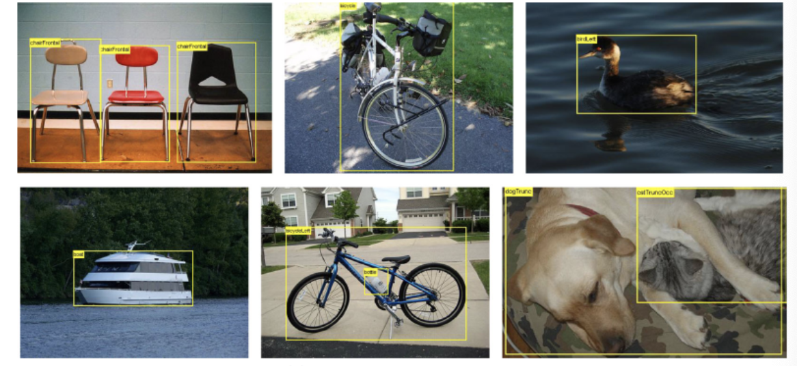</p>
<h2 id="1-voc">1. VOC数据集简介<a class="headerlink" href="#1-voc" title="Permanent link">&para;</a></h2>
<p></p>
<p>Pascal VOC数据集作为基准数据，在目标检测中常被使用到，很多优秀的计算机视觉模型比如分类，定位，检测，分割，动作识别等模型都是基于PASCAL VOC挑战赛及其数据集上推出的，尤其是一些目标检测模型（比如RCNN系列，以及后面要介绍的YOLO，SSD等）。</p>
<h3 id="11">1.1 数据情况<a class="headerlink" href="#11" title="Permanent link">&para;</a></h3>
<p>常用的版本有2007和2012两个，在这里我们使用VOC2007作为案例实现的数据，该数据集总共有四大类，20个小类，如下图所示：</p>
<p>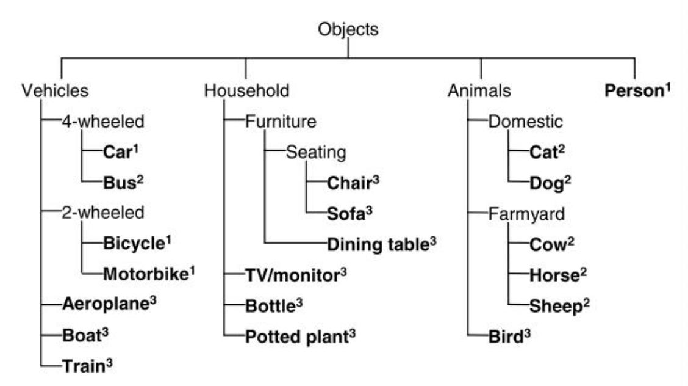</p>
<ul>
<li>从2007年开始，PASCAL VOC每年的数据集都是这个层级结构</li>
<li>总共四个大类：vehicle,household,animal,person</li>
<li>总共20个小类，预测的时候是只输出图中黑色粗体的类别</li>
</ul>
<p>组织结构如下图所示：</p>
<p>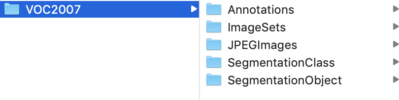</p>
<ul>
<li><strong>Annotations</strong> 进行 detection 任务时的标签文件，xml 形式，文件名与图片名一一对应</li>
<li>ImageSets 包含三个子文件夹 Layout、Main、Segmentation，其中 Main 存放的是分类和检测的数据集分割文件</li>
<li><strong>JPEGImages</strong> 存放 .jpg 格式的图片文件</li>
<li>SegmentationClass 存放按照 class 分割的图片</li>
<li>SegmentationObject 存放按照 object 分割的图片</li>
</ul>
<p>我们使用的就是Annotations和JPEGImages两部分内容，另外我们通过Main文件夹下的文本文件获取对应的训练集及验证集数据，内容如下所示：</p>
<p></p>
<ul>
<li>train.txt 写着用于训练的图片名称， 共 2501 个</li>
<li>val.txt 写着用于验证的图片名称，共 2510 个</li>
<li>trainval.txt train与val的合集。共 5011 个</li>
</ul>
<h3 id="12">1.2 标注信息<a class="headerlink" href="#12" title="Permanent link">&para;</a></h3>
<p>数据集的标注有专门的标注团队，并遵从统一的标注标准，标注信息是用 xml 文件组织，如下图所示：</p>
<p>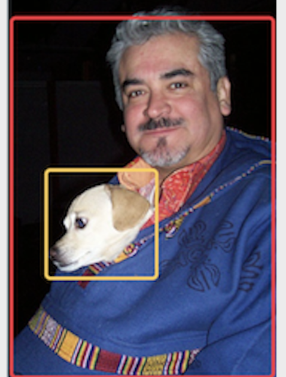</p>
<p>标注信息如下所示：</p>
<div class="highlight"><pre><span></span><code><span class="nt">&lt;annotation&gt;</span>
    <span class="c">&lt;!--数据集版本位置--&gt;</span>
    <span class="nt">&lt;folder&gt;</span>VOC2007<span class="nt">&lt;/folder&gt;</span>   
    <span class="c">&lt;!--文件名--&gt;</span>
    <span class="nt">&lt;filename&gt;</span>000001.jpg<span class="nt">&lt;/filename&gt;</span>   
    <span class="c">&lt;!--文件来源--&gt;</span>
    <span class="nt">&lt;source&gt;</span>                          
        <span class="nt">&lt;database&gt;</span>The VOC2007 Database<span class="nt">&lt;/database&gt;</span>
        <span class="nt">&lt;annotation&gt;</span>PASCAL VOC2007<span class="nt">&lt;/annotation&gt;</span>
        <span class="nt">&lt;image&gt;</span>flickr<span class="nt">&lt;/image&gt;</span>
        <span class="nt">&lt;flickrid&gt;</span>341012865<span class="nt">&lt;/flickrid&gt;</span>
    <span class="nt">&lt;/source&gt;</span>
    <span class="c">&lt;!--拥有者--&gt;</span>
    <span class="nt">&lt;owner&gt;</span>                           
        <span class="nt">&lt;flickrid&gt;</span>Fried Camels<span class="nt">&lt;/flickrid&gt;</span>
        <span class="nt">&lt;name&gt;</span>Jinky the Fruit Bat<span class="nt">&lt;/name&gt;</span>
    <span class="nt">&lt;/owner&gt;</span>
    <span class="c">&lt;!--图片大小--&gt;</span>
    <span class="nt">&lt;size&gt;</span>                           
        <span class="nt">&lt;width&gt;</span>353<span class="nt">&lt;/width&gt;</span>
        <span class="nt">&lt;height&gt;</span>500<span class="nt">&lt;/height&gt;</span>
        <span class="nt">&lt;depth&gt;</span>3<span class="nt">&lt;/depth&gt;</span>
    <span class="nt">&lt;/size&gt;</span>
    <span class="c">&lt;!--是否分割--&gt;</span>
    <span class="nt">&lt;segmented&gt;</span>0<span class="nt">&lt;/segmented&gt;</span>
    <span class="c">&lt;!--一个目标，里面的内容是目标的相关信息--&gt;</span>
    <span class="nt">&lt;object&gt;</span>
        <span class="c">&lt;!--object名称，20个类别--&gt;</span>
        <span class="nt">&lt;name&gt;</span>dog<span class="nt">&lt;/name&gt;</span>
        <span class="c">&lt;!--拍摄角度：front, rear, left, right。。--&gt;</span>
        <span class="nt">&lt;pose&gt;</span>Left<span class="nt">&lt;/pose&gt;</span>
        <span class="c">&lt;!--目标是否被截断，或者被遮挡（超过15%）--&gt;</span>
        <span class="nt">&lt;truncated&gt;</span>1<span class="nt">&lt;/truncated&gt;</span>
        <span class="c">&lt;!--检测难易程度--&gt;</span>
        <span class="nt">&lt;difficult&gt;</span>0<span class="nt">&lt;/difficult&gt;</span>
        <span class="c">&lt;!--bounding box 的左上角点和右下角点的坐标值--&gt;</span>
        <span class="nt">&lt;bndbox&gt;</span>
            <span class="nt">&lt;xmin&gt;</span>48<span class="nt">&lt;/xmin&gt;</span>
            <span class="nt">&lt;ymin&gt;</span>240<span class="nt">&lt;/ymin&gt;</span>
            <span class="nt">&lt;xmax&gt;</span>195<span class="nt">&lt;/xmax&gt;</span>
            <span class="nt">&lt;ymax&gt;</span>371<span class="nt">&lt;/ymax&gt;</span>
        <span class="nt">&lt;/bndbox&gt;</span>
    <span class="nt">&lt;/object&gt;</span>
    <span class="c">&lt;!--一个目标，里面的内容是目标的相关信息--&gt;</span>
    <span class="nt">&lt;object&gt;</span>
        <span class="nt">&lt;name&gt;</span>person<span class="nt">&lt;/name&gt;</span>
        <span class="nt">&lt;pose&gt;</span>Left<span class="nt">&lt;/pose&gt;</span>
        <span class="c">&lt;!--目标是否被截断，或者被遮挡（超过15%）--&gt;</span>
        <span class="nt">&lt;truncated&gt;</span>1<span class="nt">&lt;/truncated&gt;</span>
        <span class="nt">&lt;difficult&gt;</span>0<span class="nt">&lt;/difficult&gt;</span>
        <span class="nt">&lt;bndbox&gt;</span>
            <span class="nt">&lt;xmin&gt;</span>8<span class="nt">&lt;/xmin&gt;</span>
            <span class="nt">&lt;ymin&gt;</span>12<span class="nt">&lt;/ymin&gt;</span>
            <span class="nt">&lt;xmax&gt;</span>352<span class="nt">&lt;/xmax&gt;</span>
            <span class="nt">&lt;ymax&gt;</span>498<span class="nt">&lt;/ymax&gt;</span>
        <span class="nt">&lt;/bndbox&gt;</span>
    <span class="nt">&lt;/object&gt;</span>
<span class="nt">&lt;/annotation&gt;</span>
</code></pre></div>

<h2 id="2">2 数据集解析<a class="headerlink" href="#2" title="Permanent link">&para;</a></h2>
<p>该数据集的解析在fasterRCNN/detection/datasets/pascal_voc.py中:</p>
<p>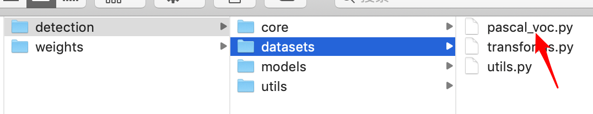</p>
<p>接下来我们分析整个的实现过程：</p>
<h3 id="21">2.1 指定数据集<a class="headerlink" href="#21" title="Permanent link">&para;</a></h3>
<p>根据指定的数据集，获取对应的文件信息，进行处理,其中main中txt中的内容如下所示:</p>
<p>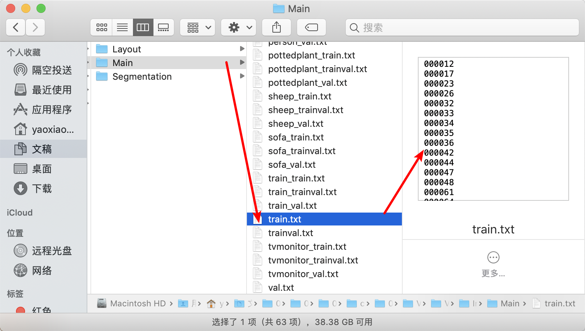</p>
<p>因此我们根据txt中的内容加载对应的训练和验证集:</p>
<div class="highlight"><pre><span></span><code>    <span class="k">def</span> <span class="nf">load_labels</span><span class="p">(</span><span class="bp">self</span><span class="p">):</span>
        <span class="c1"># 根据标签信息加载相应的数据</span>
        <span class="k">if</span> <span class="bp">self</span><span class="o">.</span><span class="n">phase</span> <span class="o">==</span> <span class="s1">&#39;train&#39;</span><span class="p">:</span>
            <span class="n">txtname</span> <span class="o">=</span> <span class="n">os</span><span class="o">.</span><span class="n">path</span><span class="o">.</span><span class="n">join</span><span class="p">(</span>
                <span class="bp">self</span><span class="o">.</span><span class="n">data_path</span><span class="p">,</span> <span class="s1">&#39;ImageSets&#39;</span><span class="p">,</span> <span class="s1">&#39;Main&#39;</span><span class="p">,</span> <span class="s1">&#39;trainval.txt&#39;</span><span class="p">)</span>
        <span class="k">else</span><span class="p">:</span>
            <span class="n">txtname</span> <span class="o">=</span> <span class="n">os</span><span class="o">.</span><span class="n">path</span><span class="o">.</span><span class="n">join</span><span class="p">(</span>
                <span class="bp">self</span><span class="o">.</span><span class="n">data_path</span><span class="p">,</span> <span class="s1">&#39;ImageSets&#39;</span><span class="p">,</span> <span class="s1">&#39;Main&#39;</span><span class="p">,</span> <span class="s1">&#39;val.txt&#39;</span><span class="p">)</span>
        <span class="c1"># 获取图像的索引</span>
        <span class="k">with</span> <span class="nb">open</span><span class="p">(</span><span class="n">txtname</span><span class="p">,</span> <span class="s1">&#39;r&#39;</span><span class="p">)</span> <span class="k">as</span> <span class="n">f</span><span class="p">:</span>
            <span class="bp">self</span><span class="o">.</span><span class="n">image_index</span> <span class="o">=</span> <span class="p">[</span><span class="n">x</span><span class="o">.</span><span class="n">strip</span><span class="p">()</span> <span class="k">for</span> <span class="n">x</span> <span class="ow">in</span> <span class="n">f</span><span class="o">.</span><span class="n">readlines</span><span class="p">()]</span>
        <span class="bp">self</span><span class="o">.</span><span class="n">num_image</span> <span class="o">=</span> <span class="nb">len</span><span class="p">(</span><span class="bp">self</span><span class="o">.</span><span class="n">image_index</span><span class="p">)</span>
        <span class="c1"># 图像对应的索引放到列表gt_labels中</span>
        <span class="n">gt_labels</span> <span class="o">=</span> <span class="p">[]</span>
        <span class="c1"># 遍历每一份图像获取标注信息</span>
        <span class="k">for</span> <span class="n">index</span> <span class="ow">in</span> <span class="bp">self</span><span class="o">.</span><span class="n">image_index</span><span class="p">:</span>
            <span class="c1"># 获取标注信息，包括objet box坐标信息 以及类别信息</span>
            <span class="n">gt_label</span> <span class="o">=</span> <span class="bp">self</span><span class="o">.</span><span class="n">load_pascal_annotation</span><span class="p">(</span><span class="n">index</span><span class="p">)</span>
            <span class="c1"># 添加到列表中</span>
            <span class="n">gt_labels</span><span class="o">.</span><span class="n">append</span><span class="p">(</span><span class="n">gt_label</span><span class="p">)</span>
        <span class="c1"># 将标注信息赋值给属性：self.gt_labels</span>
        <span class="bp">self</span><span class="o">.</span><span class="n">gt_labels</span> <span class="o">=</span> <span class="n">gt_labels</span>
</code></pre></div>

<h3 id="22">2.2图像读取<a class="headerlink" href="#22" title="Permanent link">&para;</a></h3>
<p>利用OpenCV读取图像数据，并进行通道的转换：</p>
<div class="highlight"><pre><span></span><code><span class="k">def</span> <span class="nf">image_read</span><span class="p">(</span><span class="bp">self</span><span class="p">,</span> <span class="n">imname</span><span class="p">):</span>
    <span class="c1"># opencv 中默认图片色彩格式为BGR</span>
    <span class="n">image</span> <span class="o">=</span> <span class="n">cv2</span><span class="o">.</span><span class="n">imread</span><span class="p">(</span><span class="n">imname</span><span class="p">)</span>
    <span class="c1"># 将图片转成RGB格式</span>
    <span class="n">image</span> <span class="o">=</span> <span class="n">cv2</span><span class="o">.</span><span class="n">cvtColor</span><span class="p">(</span><span class="n">image</span><span class="p">,</span><span class="n">cv2</span><span class="o">.</span><span class="n">COLOR_BGR2RGB</span><span class="p">)</span><span class="o">.</span><span class="n">astype</span><span class="p">(</span><span class="n">np</span><span class="o">.</span><span class="n">float32</span><span class="p">)</span>
    <span class="k">return</span> <span class="n">image</span>
</code></pre></div>

<h3 id="23">2.3 标准信息的读取<a class="headerlink" href="#23" title="Permanent link">&para;</a></h3>
<p>标注信息的读取主要是根据图像的文件名获取索引后，找到对应的XML文件，读取其中的内容，得到图像的标注信息。</p>
<div class="highlight"><pre><span></span><code><span class="k">def</span> <span class="nf">load_pascal_annotation</span><span class="p">(</span><span class="bp">self</span><span class="p">,</span> <span class="n">index</span><span class="p">):</span>
    <span class="sd">&quot;&quot;&quot;</span>
<span class="sd">    在PASCAL VOC的XML文件获取边框信息和类别信息</span>
<span class="sd">    &quot;&quot;&quot;</span>
    <span class="c1"># 获取XML文件的地址</span>
    <span class="n">filename</span> <span class="o">=</span> <span class="n">os</span><span class="o">.</span><span class="n">path</span><span class="o">.</span><span class="n">join</span><span class="p">(</span><span class="bp">self</span><span class="o">.</span><span class="n">data_path</span><span class="p">,</span> <span class="s1">&#39;Annotations&#39;</span><span class="p">,</span> <span class="n">index</span> <span class="o">+</span> <span class="s1">&#39;.xml&#39;</span><span class="p">)</span>
    <span class="c1"># 将XML中的内容获取出来</span>
    <span class="n">tree</span> <span class="o">=</span> <span class="n">ET</span><span class="o">.</span><span class="n">parse</span><span class="p">(</span><span class="n">filename</span><span class="p">)</span>
    <span class="c1"># 获取节点图像的size</span>
    <span class="n">image_size</span> <span class="o">=</span> <span class="n">tree</span><span class="o">.</span><span class="n">find</span><span class="p">(</span><span class="s1">&#39;size&#39;</span><span class="p">)</span>
    <span class="c1"># 将图像的size信息存放到sizeinfo中</span>
    <span class="n">size_info</span> <span class="o">=</span> <span class="n">np</span><span class="o">.</span><span class="n">zeros</span><span class="p">((</span><span class="mi">2</span><span class="p">,),</span> <span class="n">dtype</span><span class="o">=</span><span class="n">np</span><span class="o">.</span><span class="n">float32</span><span class="p">)</span>
    <span class="c1"># 宽</span>
    <span class="n">size_info</span><span class="p">[</span><span class="mi">0</span><span class="p">]</span> <span class="o">=</span> <span class="nb">float</span><span class="p">(</span><span class="n">image_size</span><span class="o">.</span><span class="n">find</span><span class="p">(</span><span class="s1">&#39;width&#39;</span><span class="p">)</span><span class="o">.</span><span class="n">text</span><span class="p">)</span>
    <span class="c1"># 高</span>
    <span class="n">size_info</span><span class="p">[</span><span class="mi">1</span><span class="p">]</span> <span class="o">=</span> <span class="nb">float</span><span class="p">(</span><span class="n">image_size</span><span class="o">.</span><span class="n">find</span><span class="p">(</span><span class="s1">&#39;height&#39;</span><span class="p">)</span><span class="o">.</span><span class="n">text</span><span class="p">)</span>
    <span class="c1"># 找到所有的object节点</span>
    <span class="n">objs</span> <span class="o">=</span> <span class="n">tree</span><span class="o">.</span><span class="n">findall</span><span class="p">(</span><span class="s1">&#39;object&#39;</span><span class="p">)</span>
    <span class="c1"># object的数量</span>
    <span class="n">num_objs</span> <span class="o">=</span> <span class="nb">len</span><span class="p">(</span><span class="n">objs</span><span class="p">)</span>
    <span class="c1"># boxes 坐标 (num_objs,4)</span>
    <span class="n">boxes</span> <span class="o">=</span> <span class="n">np</span><span class="o">.</span><span class="n">zeros</span><span class="p">((</span><span class="n">num_objs</span><span class="p">,</span> <span class="mi">4</span><span class="p">),</span> <span class="n">dtype</span><span class="o">=</span><span class="n">np</span><span class="o">.</span><span class="n">float32</span><span class="p">)</span>
    <span class="c1"># class 的数量num_objs个，每个目标一个类别</span>
    <span class="n">gt_classes</span> <span class="o">=</span> <span class="n">np</span><span class="o">.</span><span class="n">zeros</span><span class="p">((</span><span class="n">num_objs</span><span class="p">),</span> <span class="n">dtype</span><span class="o">=</span><span class="n">np</span><span class="o">.</span><span class="n">int32</span><span class="p">)</span>
    <span class="c1"># 遍历所有的目标</span>
    <span class="k">for</span> <span class="n">ix</span><span class="p">,</span> <span class="n">obj</span> <span class="ow">in</span> <span class="nb">enumerate</span><span class="p">(</span><span class="n">objs</span><span class="p">):</span>
        <span class="c1"># 找到bndbox节点</span>
        <span class="n">bbox</span> <span class="o">=</span> <span class="n">obj</span><span class="o">.</span><span class="n">find</span><span class="p">(</span><span class="s1">&#39;bndbox&#39;</span><span class="p">)</span>
        <span class="c1"># 获取坐标框的位置信息</span>
        <span class="n">x1</span> <span class="o">=</span> <span class="nb">float</span><span class="p">(</span><span class="n">bbox</span><span class="o">.</span><span class="n">find</span><span class="p">(</span><span class="s1">&#39;xmin&#39;</span><span class="p">)</span><span class="o">.</span><span class="n">text</span><span class="p">)</span> <span class="o">-</span> <span class="mi">1</span>
        <span class="n">y1</span> <span class="o">=</span> <span class="nb">float</span><span class="p">(</span><span class="n">bbox</span><span class="o">.</span><span class="n">find</span><span class="p">(</span><span class="s1">&#39;ymin&#39;</span><span class="p">)</span><span class="o">.</span><span class="n">text</span><span class="p">)</span> <span class="o">-</span> <span class="mi">1</span>
        <span class="n">x2</span> <span class="o">=</span> <span class="nb">float</span><span class="p">(</span><span class="n">bbox</span><span class="o">.</span><span class="n">find</span><span class="p">(</span><span class="s1">&#39;xmax&#39;</span><span class="p">)</span><span class="o">.</span><span class="n">text</span><span class="p">)</span> <span class="o">-</span> <span class="mi">1</span>
        <span class="n">y2</span> <span class="o">=</span> <span class="nb">float</span><span class="p">(</span><span class="n">bbox</span><span class="o">.</span><span class="n">find</span><span class="p">(</span><span class="s1">&#39;ymax&#39;</span><span class="p">)</span><span class="o">.</span><span class="n">text</span><span class="p">)</span> <span class="o">-</span> <span class="mi">1</span>
        <span class="c1"># 将位置信息存储在bbox中，注意boxes是一个np类的矩阵 大小为[num_objs,4]</span>
        <span class="n">boxes</span><span class="p">[</span><span class="n">ix</span><span class="p">,</span> <span class="p">:]</span> <span class="o">=</span> <span class="p">[</span><span class="n">y1</span><span class="p">,</span> <span class="n">x1</span><span class="p">,</span> <span class="n">y2</span><span class="p">,</span> <span class="n">x2</span><span class="p">]</span>
        <span class="c1"># 找到class对应的类别信息</span>
        <span class="bp">cls</span> <span class="o">=</span> <span class="bp">self</span><span class="o">.</span><span class="n">class_to_ind</span><span class="p">[</span><span class="n">obj</span><span class="o">.</span><span class="n">find</span><span class="p">(</span><span class="s1">&#39;name&#39;</span><span class="p">)</span><span class="o">.</span><span class="n">text</span><span class="o">.</span><span class="n">lower</span><span class="p">()</span><span class="o">.</span><span class="n">strip</span><span class="p">()]</span>
        <span class="c1"># 将class信息存入gt_classses中，注意gt_classes也是一个np类的矩阵 大小为[num_objs] 是int值 对应于name</span>
        <span class="n">gt_classes</span><span class="p">[</span><span class="n">ix</span><span class="p">]</span> <span class="o">=</span> <span class="bp">cls</span>
        <span class="c1"># 获取图像的存储路径</span>
        <span class="n">imname</span> <span class="o">=</span> <span class="n">os</span><span class="o">.</span><span class="n">path</span><span class="o">.</span><span class="n">join</span><span class="p">(</span><span class="bp">self</span><span class="o">.</span><span class="n">data_path</span><span class="p">,</span> <span class="s1">&#39;JPEGImages&#39;</span><span class="p">,</span> <span class="n">index</span> <span class="o">+</span> <span class="s1">&#39;.jpg&#39;</span><span class="p">)</span>
    <span class="c1"># 返回结果</span>
    <span class="k">return</span> <span class="p">{</span><span class="s1">&#39;boxes&#39;</span><span class="p">:</span> <span class="n">boxes</span><span class="p">,</span> <span class="s1">&#39;gt_classs&#39;</span><span class="p">:</span> <span class="n">gt_classes</span><span class="p">,</span> <span class="s1">&#39;imname&#39;</span><span class="p">:</span> <span class="n">imname</span><span class="p">,</span>  <span class="s1">&#39;image_size&#39;</span><span class="p">:</span> <span class="n">size_info</span><span class="p">,</span>
            <span class="s1">&#39;image_index&#39;</span><span class="p">:</span> <span class="n">index</span><span class="p">}</span>
</code></pre></div>

<h3 id="24">2.4 图像的大小处理<a class="headerlink" href="#24" title="Permanent link">&para;</a></h3>
<p>在将图像送入到网络中时，我们需要将其进行大小的调整，在这里我们为了保证长宽比，使最长边resize为1024，短边进行pad:</p>
<div class="highlight"><pre><span></span><code>    <span class="k">def</span> <span class="nf">prep_im_for_blob</span><span class="p">(</span><span class="bp">self</span><span class="p">,</span> <span class="n">im</span><span class="p">,</span> <span class="n">pixel_means</span><span class="p">,</span> <span class="n">target_size</span><span class="p">,</span> <span class="n">max_size</span><span class="p">):</span>
        <span class="s2">&quot;对输入的图像进行处理&quot;</span>
        <span class="n">im</span> <span class="o">=</span> <span class="n">im</span><span class="o">.</span><span class="n">astype</span><span class="p">(</span><span class="n">np</span><span class="o">.</span><span class="n">float32</span><span class="p">,</span> <span class="n">copy</span><span class="o">=</span><span class="bp">False</span><span class="p">)</span>
        <span class="c1"># 减去均值</span>
        <span class="n">im</span> <span class="o">-=</span> <span class="n">pixel_means</span>
        <span class="c1"># 图像的大小</span>
        <span class="n">im_shape</span> <span class="o">=</span> <span class="n">im</span><span class="o">.</span><span class="n">shape</span>
        <span class="c1"># 最短边</span>
        <span class="n">im_size_min</span> <span class="o">=</span> <span class="n">np</span><span class="o">.</span><span class="n">min</span><span class="p">(</span><span class="n">im_shape</span><span class="p">[</span><span class="mi">0</span><span class="p">:</span><span class="mi">2</span><span class="p">])</span>
        <span class="c1"># 最长边</span>
        <span class="n">im_size_max</span> <span class="o">=</span> <span class="n">np</span><span class="o">.</span><span class="n">max</span><span class="p">(</span><span class="n">im_shape</span><span class="p">[</span><span class="mi">0</span><span class="p">:</span><span class="mi">2</span><span class="p">])</span>
        <span class="c1"># 短边变换到800的比例</span>
        <span class="n">im_scale</span> <span class="o">=</span> <span class="nb">float</span><span class="p">(</span><span class="n">target_size</span><span class="p">)</span> <span class="o">/</span> <span class="nb">float</span><span class="p">(</span><span class="n">im_size_min</span><span class="p">)</span>  <span class="c1"># 600/最短边</span>
        <span class="c1"># 若长边以上述比例变换后大于1024，则修正变换比例</span>
        <span class="k">if</span> <span class="n">np</span><span class="o">.</span><span class="n">round</span><span class="p">(</span><span class="n">im_scale</span> <span class="o">*</span> <span class="n">im_size_max</span><span class="p">)</span> <span class="o">&gt;</span> <span class="n">max_size</span><span class="p">:</span>
            <span class="n">im_scale</span> <span class="o">=</span> <span class="nb">float</span><span class="p">(</span><span class="n">max_size</span><span class="p">)</span> <span class="o">/</span> <span class="nb">float</span><span class="p">(</span><span class="n">im_size_max</span><span class="p">)</span>
        <span class="c1"># 根据变换比例对图像进行resize</span>
        <span class="n">im</span> <span class="o">=</span> <span class="n">cv2</span><span class="o">.</span><span class="n">resize</span><span class="p">(</span><span class="n">im</span><span class="p">,</span> <span class="bp">None</span><span class="p">,</span> <span class="bp">None</span><span class="p">,</span> <span class="n">fx</span><span class="o">=</span><span class="n">im_scale</span><span class="p">,</span> <span class="n">fy</span><span class="o">=</span><span class="n">im_scale</span><span class="p">,</span> <span class="n">interpolation</span><span class="o">=</span><span class="n">cv2</span><span class="o">.</span><span class="n">INTER_LINEAR</span><span class="p">)</span>
        <span class="n">shape</span> <span class="o">=</span> <span class="p">(</span><span class="mi">1024</span><span class="p">,</span> <span class="mi">1024</span><span class="p">,</span> <span class="n">im</span><span class="o">.</span><span class="n">shape</span><span class="p">[</span><span class="o">-</span><span class="mi">1</span><span class="p">])</span>
        <span class="n">pad</span> <span class="o">=</span> <span class="n">np</span><span class="o">.</span><span class="n">zeros</span><span class="p">(</span><span class="n">shape</span><span class="p">,</span> <span class="n">dtype</span><span class="o">=</span><span class="n">im</span><span class="o">.</span><span class="n">dtype</span><span class="p">)</span>
        <span class="n">pad</span><span class="p">[:</span><span class="n">im</span><span class="o">.</span><span class="n">shape</span><span class="p">[</span><span class="mi">0</span><span class="p">],</span> <span class="p">:</span><span class="n">im</span><span class="o">.</span><span class="n">shape</span><span class="p">[</span><span class="mi">1</span><span class="p">],</span> <span class="o">...</span><span class="p">]</span> <span class="o">=</span> <span class="n">im</span>
        <span class="c1"># 返回im 和 im_scale</span>
        <span class="k">return</span> <span class="n">pad</span><span class="p">,</span> <span class="n">im_scale</span><span class="p">,</span> <span class="n">im</span><span class="o">.</span><span class="n">shape</span>
</code></pre></div>

<h3 id="25">2.5 构建数据读取的类<a class="headerlink" href="#25" title="Permanent link">&para;</a></h3>
<p>在这里我们使用tf.keras.utils.Sequence来完成数据的读取，继承Sequence类必须重载三个私有方法__init__、<strong>len__和__getitem</strong>，主要是__getitem__。</p>
<ul>
<li>__init__是构造方法，用于初始化数据的。</li>
<li>__len__用于计算样本数据长度。</li>
<li>__getitem__用于生成整个batch的数据，送入神经网络模型进行训练，其输出格式是元组。__getitem__相当于生成器的作用。</li>
</ul>
<p><code>Sequence</code>是进行多处理的更安全方法。这种结构保证了网络在每个时间段的每个样本上只会训练一次。</p>
<p>例如：</p>
<div class="highlight"><pre><span></span><code> <span class="k">class</span> <span class="nc">CIFAR10Sequence</span><span class="p">(</span><span class="n">Sequence</span><span class="p">):</span>
        <span class="c1"># 定义一个类继承自Sequence</span>
        <span class="c1"># _init_方法进行初始化数据，指定相应的属性即可</span>
        <span class="k">def</span> <span class="fm">__init__</span><span class="p">(</span><span class="bp">self</span><span class="p">,</span> <span class="n">x_set</span><span class="p">,</span> <span class="n">y_set</span><span class="p">,</span> <span class="n">batch_size</span><span class="p">):</span>
            <span class="c1"># 数据集</span>
            <span class="bp">self</span><span class="o">.</span><span class="n">x</span><span class="p">,</span> <span class="bp">self</span><span class="o">.</span><span class="n">y</span> <span class="o">=</span> <span class="n">x_set</span><span class="p">,</span> <span class="n">y_set</span>
            <span class="c1"># batch的大小</span>
            <span class="bp">self</span><span class="o">.</span><span class="n">batch_size</span> <span class="o">=</span> <span class="n">batch_size</span>
        <span class="c1"># 定义一个epoch中的迭代次数</span>
        <span class="k">def</span> <span class="fm">__len__</span><span class="p">(</span><span class="bp">self</span><span class="p">):</span>
            <span class="k">return</span> <span class="n">math</span><span class="o">.</span><span class="n">ceil</span><span class="p">(</span><span class="nb">len</span><span class="p">(</span><span class="bp">self</span><span class="o">.</span><span class="n">x</span><span class="p">)</span> <span class="o">/</span> <span class="bp">self</span><span class="o">.</span><span class="n">batch_size</span><span class="p">)</span>
        <span class="c1"># 获取一个批次数据</span>
        <span class="k">def</span> <span class="fm">__getitem__</span><span class="p">(</span><span class="bp">self</span><span class="p">,</span> <span class="n">idx</span><span class="p">):</span>
            <span class="c1"># 获取一个批次的特征值数据</span>
            <span class="n">batch_x</span> <span class="o">=</span> <span class="bp">self</span><span class="o">.</span><span class="n">x</span><span class="p">[</span><span class="n">idx</span> <span class="o">*</span> <span class="bp">self</span><span class="o">.</span><span class="n">batch_size</span><span class="p">:(</span><span class="n">idx</span> <span class="o">+</span> <span class="mi">1</span><span class="p">)</span> <span class="o">*</span>
            <span class="bp">self</span><span class="o">.</span><span class="n">batch_size</span><span class="p">]</span>
            <span class="c1"># 获取一个批次的目标值数据</span>
            <span class="n">batch_y</span> <span class="o">=</span> <span class="bp">self</span><span class="o">.</span><span class="n">y</span><span class="p">[</span><span class="n">idx</span> <span class="o">*</span> <span class="bp">self</span><span class="o">.</span><span class="n">batch_size</span><span class="p">:(</span><span class="n">idx</span> <span class="o">+</span> <span class="mi">1</span><span class="p">)</span> <span class="o">*</span>
            <span class="bp">self</span><span class="o">.</span><span class="n">batch_size</span><span class="p">]</span>
            <span class="c1"># 返回结果</span>
            <span class="k">return</span> <span class="n">np</span><span class="o">.</span><span class="n">array</span><span class="p">([</span>
                <span class="n">resize</span><span class="p">(</span><span class="n">imread</span><span class="p">(</span><span class="n">file_name</span><span class="p">))</span>
                   <span class="k">for</span> <span class="n">file_name</span> <span class="ow">in</span> <span class="n">batch_x</span><span class="p">]),</span> <span class="n">np</span><span class="o">.</span><span class="n">array</span><span class="p">(</span><span class="n">batch_y</span><span class="p">)</span>
</code></pre></div>

<p>那在VOC数据集的读取中我们也类似的进行处理：</p>
<div class="highlight"><pre><span></span><code><span class="k">class</span> <span class="nc">pascal_voc</span><span class="p">(</span><span class="n">keras</span><span class="o">.</span><span class="n">utils</span><span class="o">.</span><span class="n">Sequence</span><span class="p">):</span>
    <span class="k">def</span> <span class="fm">__init__</span><span class="p">(</span><span class="bp">self</span><span class="p">,</span> <span class="n">phase</span><span class="p">):</span>
        <span class="c1"># pascal_voc 2007数据的存储路径</span>
        <span class="bp">self</span><span class="o">.</span><span class="n">data_path</span> <span class="o">=</span> <span class="n">os</span><span class="o">.</span><span class="n">path</span><span class="o">.</span><span class="n">join</span><span class="p">(</span><span class="s1">&#39;../VOCdevkit&#39;</span><span class="p">,</span> <span class="s1">&#39;VOC2007&#39;</span><span class="p">)</span>
        <span class="c1"># batch_size</span>
        <span class="bp">self</span><span class="o">.</span><span class="n">batch_size</span> <span class="o">=</span> <span class="mi">1</span>
        <span class="c1"># 图片的最小尺寸</span>
        <span class="bp">self</span><span class="o">.</span><span class="n">target_size</span> <span class="o">=</span> <span class="mi">800</span>
        <span class="c1"># 图片的最大尺寸</span>
        <span class="bp">self</span><span class="o">.</span><span class="n">max_size</span> <span class="o">=</span> <span class="mi">1024</span>
        <span class="c1"># 输入网络中的图像尺寸</span>
        <span class="bp">self</span><span class="o">.</span><span class="n">scale</span> <span class="o">=</span> <span class="p">(</span><span class="mi">1024</span><span class="p">,</span> <span class="mi">1024</span><span class="p">)</span>
        <span class="c1"># 类别信息  [&#39;background&#39;, &#39;aeroplane&#39;, &#39;bicycle&#39;, &#39;bird&#39;, &#39;boat&#39;, &#39;bottle&#39;, &#39;bus&#39;....]</span>
        <span class="bp">self</span><span class="o">.</span><span class="n">classes</span> <span class="o">=</span> <span class="p">[</span><span class="s1">&#39;background&#39;</span><span class="p">,</span> <span class="s1">&#39;aeroplane&#39;</span><span class="p">,</span> <span class="s1">&#39;bicycle&#39;</span><span class="p">,</span> <span class="s1">&#39;bird&#39;</span><span class="p">,</span> <span class="s1">&#39;boat&#39;</span><span class="p">,</span> <span class="s1">&#39;bottle&#39;</span><span class="p">,</span> <span class="s1">&#39;bus&#39;</span><span class="p">,</span> <span class="s1">&#39;car&#39;</span><span class="p">,</span> <span class="s1">&#39;cat&#39;</span><span class="p">,</span> <span class="s1">&#39;chair&#39;</span><span class="p">,</span> <span class="s1">&#39;cow&#39;</span><span class="p">,</span> <span class="s1">&#39;diningtable&#39;</span><span class="p">,</span> <span class="s1">&#39;dog&#39;</span><span class="p">,</span> <span class="s1">&#39;horse&#39;</span><span class="p">,</span><span class="s1">&#39;motorbike&#39;</span><span class="p">,</span> <span class="s1">&#39;person&#39;</span><span class="p">,</span> <span class="s1">&#39;pottedplant&#39;</span><span class="p">,</span> <span class="s1">&#39;sheep&#39;</span><span class="p">,</span> <span class="s1">&#39;sofa&#39;</span><span class="p">,</span><span class="s1">&#39;train&#39;</span><span class="p">,</span> <span class="s1">&#39;tvmonitor&#39;</span><span class="p">]</span>

        <span class="c1"># 构建目标类别的字典{&#39;background&#39;: 0, &#39;aeroplane&#39;: 1, &quot;bicycle&quot;: 2....}</span>
        <span class="bp">self</span><span class="o">.</span><span class="n">class_to_ind</span> <span class="o">=</span> <span class="nb">dict</span><span class="p">(</span><span class="nb">zip</span><span class="p">(</span><span class="bp">self</span><span class="o">.</span><span class="n">classes</span><span class="p">,</span> <span class="nb">range</span><span class="p">(</span><span class="nb">len</span><span class="p">(</span><span class="bp">self</span><span class="o">.</span><span class="n">classes</span><span class="p">))))</span>
        <span class="c1"># 像素RGB的均值</span>
        <span class="bp">self</span><span class="o">.</span><span class="n">pixel_means</span> <span class="o">=</span> <span class="n">np</span><span class="o">.</span><span class="n">array</span><span class="p">([[[</span><span class="mf">122.7717</span><span class="p">,</span> <span class="mf">115.9465</span><span class="p">,</span> <span class="mf">102.9801</span><span class="p">]]])</span>
        <span class="c1"># 用来指明获取训练集或者是验证集数据</span>
        <span class="bp">self</span><span class="o">.</span><span class="n">phase</span> <span class="o">=</span> <span class="n">phase</span>
        <span class="c1"># 获取图像数量，并加载相应的标签</span>
        <span class="bp">self</span><span class="o">.</span><span class="n">load_labels</span><span class="p">()</span>
        <span class="c1"># 目标总数量</span>
        <span class="bp">self</span><span class="o">.</span><span class="n">num_gtlabels</span> <span class="o">=</span> <span class="nb">len</span><span class="p">(</span><span class="bp">self</span><span class="o">.</span><span class="n">gt_labels</span><span class="p">)</span>
        <span class="bp">self</span><span class="o">.</span><span class="n">img_transform</span> <span class="o">=</span> <span class="n">transforms</span><span class="o">.</span><span class="n">ImageTransform</span><span class="p">(</span><span class="bp">self</span><span class="o">.</span><span class="n">scale</span><span class="p">,</span> <span class="bp">self</span><span class="o">.</span><span class="n">pixel_means</span><span class="p">,</span> <span class="p">[</span><span class="mf">1.</span><span class="p">,</span><span class="mf">1.</span><span class="p">,</span><span class="mf">1.</span><span class="p">],</span> <span class="s1">&#39;fixed&#39;</span><span class="p">)</span>
        <span class="bp">self</span><span class="o">.</span><span class="n">bbox_transform</span> <span class="o">=</span> <span class="n">transforms</span><span class="o">.</span><span class="n">BboxTransform</span><span class="p">()</span>
        <span class="bp">self</span><span class="o">.</span><span class="n">flip_ratio</span><span class="o">=</span><span class="mf">0.5</span>

    <span class="k">def</span> <span class="fm">__len__</span><span class="p">(</span><span class="bp">self</span><span class="p">):</span>
        <span class="c1"># 返回迭代次数</span>
        <span class="k">return</span> <span class="n">np</span><span class="o">.</span><span class="n">round</span><span class="p">(</span><span class="bp">self</span><span class="o">.</span><span class="n">num_image</span><span class="o">/</span><span class="bp">self</span><span class="o">.</span><span class="n">batch_size</span><span class="p">)</span>

    <span class="k">def</span> <span class="fm">__getitem__</span><span class="p">(</span><span class="bp">self</span><span class="p">,</span> <span class="n">idx</span><span class="p">):</span>
        <span class="c1"># 获取当前batch的起始索引值</span>
        <span class="n">i</span> <span class="o">=</span> <span class="n">idx</span> <span class="o">*</span> <span class="bp">self</span><span class="o">.</span><span class="n">batch_size</span>
        <span class="n">batch_images</span> <span class="o">=</span> <span class="p">[]</span>
        <span class="n">batch_imgmeta</span><span class="o">=</span> <span class="p">[]</span>
        <span class="n">batch_box</span> <span class="o">=</span> <span class="p">[]</span>
        <span class="n">bacth_labels</span> <span class="o">=</span> <span class="p">[]</span>
        <span class="k">for</span> <span class="n">c</span> <span class="ow">in</span> <span class="nb">range</span><span class="p">(</span><span class="bp">self</span><span class="o">.</span><span class="n">batch_size</span><span class="p">):</span>
            <span class="c1"># 获取相应的图像</span>
            <span class="n">imname</span> <span class="o">=</span> <span class="bp">self</span><span class="o">.</span><span class="n">gt_labels</span><span class="p">[</span><span class="n">i</span><span class="o">+</span><span class="n">c</span><span class="p">][</span><span class="s1">&#39;imname&#39;</span><span class="p">]</span>
            <span class="c1"># 读取图像</span>
            <span class="n">image</span> <span class="o">=</span> <span class="bp">self</span><span class="o">.</span><span class="n">image_read</span><span class="p">(</span><span class="n">imname</span><span class="p">)</span>
            <span class="c1"># 获取原始图像的尺寸</span>
            <span class="n">ori_shape</span> <span class="o">=</span> <span class="n">image</span><span class="o">.</span><span class="n">shape</span>
            <span class="c1"># 进行尺度调整后的图像及调整的尺度</span>
            <span class="n">image</span><span class="p">,</span> <span class="n">image_scale</span><span class="p">,</span><span class="n">image_shape</span><span class="o">=</span> <span class="bp">self</span><span class="o">.</span><span class="n">prep_im_for_blob</span><span class="p">(</span><span class="n">image</span><span class="p">,</span> <span class="bp">self</span><span class="o">.</span><span class="n">pixel_means</span><span class="p">,</span> <span class="bp">self</span><span class="o">.</span><span class="n">target_size</span><span class="p">,</span> <span class="bp">self</span><span class="o">.</span><span class="n">max_size</span><span class="p">)</span>
            <span class="c1"># 获取尺度变换后图像的尺寸</span>
            <span class="n">pad_shape</span> <span class="o">=</span> <span class="n">image</span><span class="o">.</span><span class="n">shape</span>
            <span class="c1"># 将gt_boxlabel与scale相乘获取图像调整后的标注框的大小：boxes.shape=[num_obj,4]</span>
            <span class="n">bboxes</span> <span class="o">=</span> <span class="bp">self</span><span class="o">.</span><span class="n">gt_labels</span><span class="p">[</span><span class="n">i</span><span class="o">+</span><span class="n">c</span><span class="p">][</span><span class="s1">&#39;boxes&#39;</span><span class="p">]</span> <span class="o">*</span> <span class="n">image_scale</span>
            <span class="c1"># 获取对应的类别信息</span>
            <span class="n">labels</span> <span class="o">=</span> <span class="bp">self</span><span class="o">.</span><span class="n">gt_labels</span><span class="p">[</span><span class="n">i</span><span class="o">+</span><span class="n">c</span><span class="p">][</span><span class="s1">&#39;gt_classs&#39;</span><span class="p">]</span>
            <span class="c1"># print(labels)</span>
            <span class="c1"># 图像的基本信息</span>
            <span class="n">img_meta_dict</span> <span class="o">=</span> <span class="nb">dict</span><span class="p">({</span>
                <span class="s1">&#39;ori_shape&#39;</span><span class="p">:</span> <span class="n">ori_shape</span><span class="p">,</span>
                <span class="s1">&#39;img_shape&#39;</span><span class="p">:</span> <span class="n">image_shape</span><span class="p">,</span>
                <span class="s1">&#39;pad_shape&#39;</span><span class="p">:</span> <span class="n">pad_shape</span><span class="p">,</span>
                <span class="s1">&#39;scale_factor&#39;</span><span class="p">:</span> <span class="n">image_scale</span>
            <span class="p">})</span>
            <span class="c1"># 将字典转换为列表的形式</span>
            <span class="n">image_meta</span> <span class="o">=</span> <span class="bp">self</span><span class="o">.</span><span class="n">compose_image_meta</span><span class="p">(</span><span class="n">img_meta_dict</span><span class="p">)</span>
            <span class="c1"># print(image_meta)</span>
            <span class="n">batch_images</span><span class="o">.</span><span class="n">append</span><span class="p">(</span><span class="n">image</span><span class="p">)</span>
            <span class="n">bacth_labels</span><span class="o">.</span><span class="n">append</span><span class="p">(</span><span class="n">labels</span><span class="p">)</span>
            <span class="n">batch_imgmeta</span><span class="o">.</span><span class="n">append</span><span class="p">(</span><span class="n">image_meta</span><span class="p">)</span>
            <span class="n">batch_box</span><span class="o">.</span><span class="n">append</span><span class="p">(</span><span class="n">bboxes</span><span class="p">)</span>

        <span class="c1"># 将图像转换成tensorflow输入的形式:【batch_size,H,W,C】</span>
        <span class="n">batch_images</span> <span class="o">=</span> <span class="n">np</span><span class="o">.</span><span class="n">reshape</span><span class="p">(</span><span class="n">batch_images</span><span class="p">,</span> <span class="p">(</span><span class="bp">self</span><span class="o">.</span><span class="n">batch_size</span><span class="p">,</span> <span class="n">image</span><span class="o">.</span><span class="n">shape</span><span class="p">[</span><span class="mi">0</span><span class="p">],</span> <span class="n">image</span><span class="o">.</span><span class="n">shape</span><span class="p">[</span><span class="mi">1</span><span class="p">],</span> <span class="mi">3</span><span class="p">))</span>
        <span class="c1"># 图像元信息</span>
        <span class="n">batch_imgmeta</span> <span class="o">=</span> <span class="n">np</span><span class="o">.</span><span class="n">reshape</span><span class="p">(</span><span class="n">batch_imgmeta</span><span class="p">,(</span><span class="bp">self</span><span class="o">.</span><span class="n">batch_size</span><span class="p">,</span><span class="mi">11</span><span class="p">))</span>
        <span class="c1"># 标注框信息</span>
        <span class="n">batch_box</span> <span class="o">=</span> <span class="n">np</span><span class="o">.</span><span class="n">reshape</span><span class="p">(</span><span class="n">batch_box</span><span class="p">,(</span><span class="bp">self</span><span class="o">.</span><span class="n">batch_size</span><span class="p">,</span><span class="n">bboxes</span><span class="o">.</span><span class="n">shape</span><span class="p">[</span><span class="mi">0</span><span class="p">],</span><span class="mi">4</span> <span class="p">))</span>
        <span class="c1"># 标注类别信息</span>
        <span class="n">bacth_labels</span> <span class="o">=</span> <span class="n">np</span><span class="o">.</span><span class="n">reshape</span><span class="p">(</span><span class="n">bacth_labels</span><span class="p">,((</span><span class="bp">self</span><span class="o">.</span><span class="n">batch_size</span><span class="p">,</span><span class="n">labels</span><span class="o">.</span><span class="n">shape</span><span class="p">[</span><span class="mi">0</span><span class="p">])))</span>
        <span class="c1"># 返回结果：尺度变换后的图像，图像元信息，目标框位置，目标类别</span>
        <span class="k">return</span> <span class="n">batch_images</span><span class="p">,</span><span class="n">batch_imgmeta</span><span class="p">,</span> <span class="n">batch_box</span><span class="p">,</span> <span class="n">bacth_labels</span>
</code></pre></div>

<h3 id="26">2.6 数据解析类演示<a class="headerlink" href="#26" title="Permanent link">&para;</a></h3>
<p>我们利用上述的数据解析方法来对VOC数据集进行解析：</p>
<ul>
<li>导入所需的工具包</li>
</ul>
<div class="highlight"><pre><span></span><code><span class="c1"># 导入数据集 VOC data</span>
<span class="kn">from</span> <span class="nn">detection.datasets</span> <span class="kn">import</span> <span class="n">pascal_voc</span>
<span class="kn">from</span> <span class="nn">detection.datasets.utils</span> <span class="kn">import</span> <span class="n">get_original_image</span>
<span class="kn">import</span> <span class="nn">numpy</span> <span class="kn">as</span> <span class="nn">np</span>
<span class="c1"># 图像展示</span>
<span class="kn">from</span> <span class="nn">matplotlib</span> <span class="kn">import</span> <span class="n">pyplot</span> <span class="k">as</span> <span class="n">plt</span>
</code></pre></div>

<ul>
<li>获取图像并设置图像的均值与方差</li>
</ul>
<div class="highlight"><pre><span></span><code><span class="c1"># 实例化</span>
<span class="n">pascal</span> <span class="o">=</span> <span class="n">pascal_voc</span><span class="o">.</span><span class="n">pascal_voc</span><span class="p">(</span><span class="s1">&#39;train&#39;</span><span class="p">)</span>
<span class="c1"># 获取图像</span>
<span class="n">image</span><span class="p">,</span> <span class="n">image_meta</span><span class="p">,</span> <span class="n">bboxes</span><span class="p">,</span> <span class="n">labels</span> <span class="o">=</span> <span class="n">pascal</span><span class="p">[</span><span class="mi">8</span><span class="p">]</span>
<span class="c1"># 图像的均值和标准差</span>
<span class="n">img_mean</span> <span class="o">=</span> <span class="p">(</span><span class="mf">122.7717</span><span class="p">,</span> <span class="mf">115.9465</span><span class="p">,</span> <span class="mf">102.9801</span><span class="p">)</span>
<span class="n">img_std</span> <span class="o">=</span> <span class="p">(</span><span class="mf">1.</span><span class="p">,</span> <span class="mf">1.</span><span class="p">,</span> <span class="mf">1.</span><span class="p">)</span>
</code></pre></div>

<ul>
<li>原图像展示</li>
</ul>
<div class="highlight"><pre><span></span><code><span class="c1"># 获取原图像</span>
<span class="n">ori_img</span> <span class="o">=</span> <span class="n">get_original_image</span><span class="p">(</span><span class="n">image</span><span class="p">[</span><span class="mi">0</span><span class="p">],</span> <span class="n">image_meta</span><span class="p">[</span><span class="mi">0</span><span class="p">],</span> <span class="n">img_mean</span><span class="p">)</span><span class="o">.</span><span class="n">astype</span><span class="p">(</span><span class="n">np</span><span class="o">.</span><span class="n">uint8</span><span class="p">)</span>
<span class="c1"># 图像展示</span>
<span class="n">plt</span><span class="o">.</span><span class="n">imshow</span><span class="p">(</span><span class="n">ori_img</span><span class="p">)</span>
<span class="n">plt</span><span class="o">.</span><span class="n">show</span><span class="p">()</span>
</code></pre></div>

<p>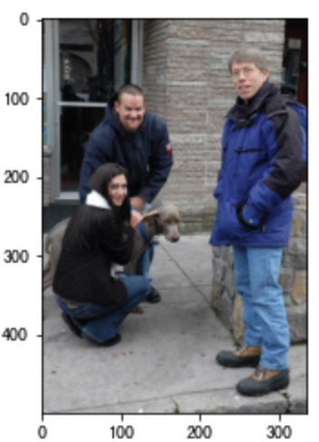</p>
<ul>
<li>送入网络中的图像进行了resize和pasding</li>
</ul>
<div class="highlight"><pre><span></span><code><span class="c1"># 送入网络中的图像</span>
<span class="n">rgb_img</span> <span class="o">=</span> <span class="n">np</span><span class="o">.</span><span class="n">round</span><span class="p">(</span><span class="n">image</span> <span class="o">+</span> <span class="n">img_mean</span><span class="p">)</span><span class="o">.</span><span class="n">astype</span><span class="p">(</span><span class="n">np</span><span class="o">.</span><span class="n">uint8</span><span class="p">)</span>
<span class="n">plt</span><span class="o">.</span><span class="n">imshow</span><span class="p">(</span><span class="n">rgb_img</span><span class="p">[</span><span class="mi">0</span><span class="p">])</span>
<span class="n">plt</span><span class="o">.</span><span class="n">show</span><span class="p">()</span>
</code></pre></div>

<p>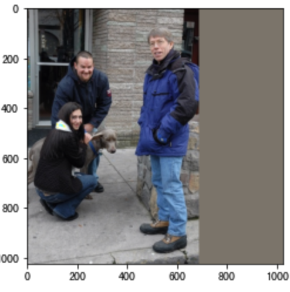</p>
<ul>
<li>将标注信息显示出来</li>
</ul>
<div class="highlight"><pre><span></span><code><span class="c1"># 显示图像，及对应的标签值</span>
<span class="kn">import</span> <span class="nn">visualize</span>
<span class="n">visualize</span><span class="o">.</span><span class="n">display_instances</span><span class="p">(</span><span class="n">rgb_img</span><span class="p">[</span><span class="mi">0</span><span class="p">],</span> <span class="n">bboxes</span><span class="p">[</span><span class="mi">0</span><span class="p">],</span> <span class="n">labels</span><span class="p">[</span><span class="mi">0</span><span class="p">],</span> <span class="n">pascal</span><span class="o">.</span><span class="n">classes</span><span class="p">)</span>
</code></pre></div>

<p>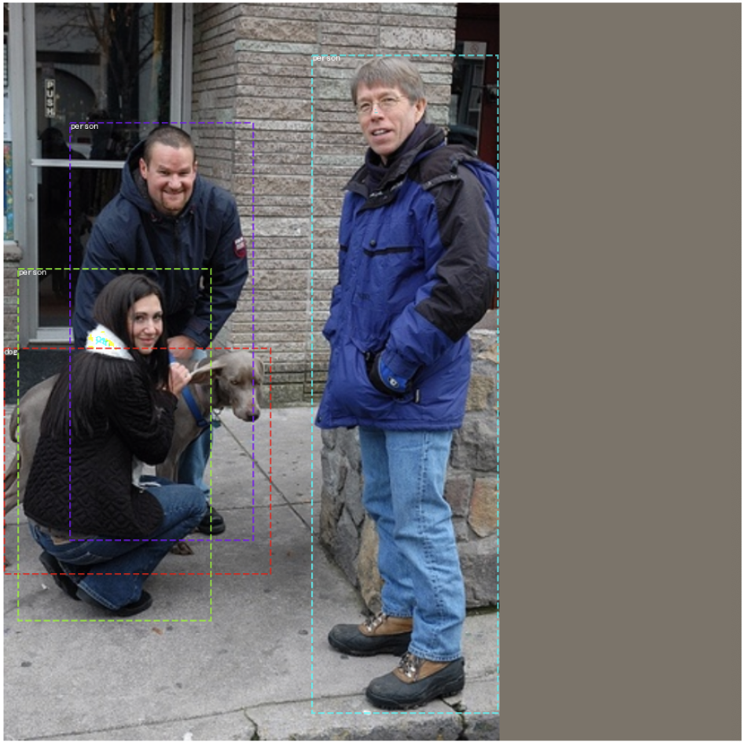</p>
<h2 id="3">3.模型训练<a class="headerlink" href="#3" title="Permanent link">&para;</a></h2>
<p>接下来我们利用已搭建好的网络和数据进行模型训练，在这里我们使用：</p>
<ul>
<li>定义tf.GradientTape的作用域，计算损失值</li>
<li>使用 <code>tape.gradient(ys, xs)</code> 自动计算梯度</li>
<li>使用 <code>optimizer.apply_gradients(grads_and_vars)</code> 自动更新模型参数</li>
</ul>
<p>完成网络的训练。我们来看下实现流程：</p>
<div class="highlight"><pre><span></span><code><span class="c1"># 导入工具包</span>
<span class="kn">from</span> <span class="nn">detection.datasets</span> <span class="kn">import</span> <span class="n">pascal_voc</span>
<span class="kn">import</span> <span class="nn">tensorflow</span> <span class="kn">as</span> <span class="nn">tf</span>
<span class="kn">import</span> <span class="nn">numpy</span> <span class="kn">as</span> <span class="nn">np</span>
<span class="kn">from</span> <span class="nn">matplotlib</span> <span class="kn">import</span> <span class="n">pyplot</span> <span class="k">as</span> <span class="n">plt</span>
<span class="kn">from</span> <span class="nn">detection.models.detectors</span> <span class="kn">import</span> <span class="n">faster_rcnn</span>
</code></pre></div>

<ul>
<li>加载数据获取数据类别</li>
</ul>
<div class="highlight"><pre><span></span><code><span class="c1"># 加载数据集</span>
<span class="n">train_dataset</span> <span class="o">=</span> <span class="n">pascal_voc</span><span class="o">.</span><span class="n">pascal_voc</span><span class="p">(</span><span class="s1">&#39;train&#39;</span><span class="p">)</span>
<span class="c1"># 数据类别</span>
<span class="n">num_classes</span> <span class="o">=</span> <span class="nb">len</span><span class="p">(</span><span class="n">train_dataset</span><span class="o">.</span><span class="n">classes</span><span class="p">)</span>
</code></pre></div>

<ul>
<li>模型加载</li>
</ul>
<div class="highlight"><pre><span></span><code><span class="n">model</span> <span class="o">=</span> <span class="n">faster_rcnn</span><span class="o">.</span><span class="n">FasterRCNN</span><span class="p">(</span><span class="n">num_classes</span><span class="o">=</span><span class="n">num_classes</span><span class="p">)</span>
</code></pre></div>

<ul>
<li>定义优化器</li>
</ul>
<div class="highlight"><pre><span></span><code><span class="c1"># 优化器</span>
<span class="n">optimizer</span> <span class="o">=</span> <span class="n">tf</span><span class="o">.</span><span class="n">keras</span><span class="o">.</span><span class="n">optimizers</span><span class="o">.</span><span class="n">SGD</span><span class="p">(</span><span class="mf">1e-3</span><span class="p">,</span> <span class="n">momentum</span><span class="o">=</span><span class="mf">0.9</span><span class="p">,</span> <span class="n">nesterov</span><span class="o">=</span><span class="bp">True</span><span class="p">)</span>
</code></pre></div>

<ul>
<li>模型训练</li>
</ul>
<div class="highlight"><pre><span></span><code><span class="c1"># 模型优化</span>
<span class="n">loss_his</span> <span class="o">=</span> <span class="p">[]</span>
<span class="k">for</span> <span class="n">epoch</span> <span class="ow">in</span> <span class="nb">range</span><span class="p">(</span><span class="mi">10</span><span class="p">):</span>
    <span class="c1"># 获取样本的index</span>
    <span class="n">indices</span> <span class="o">=</span> <span class="n">np</span><span class="o">.</span><span class="n">arange</span><span class="p">(</span><span class="n">train_dataset</span><span class="o">.</span><span class="n">num_gtlabels</span><span class="p">)</span>
    <span class="c1"># 打乱</span>
    <span class="n">np</span><span class="o">.</span><span class="n">random</span><span class="o">.</span><span class="n">shuffle</span><span class="p">(</span><span class="n">indices</span><span class="p">)</span>
    <span class="c1"># 迭代次数</span>
    <span class="nb">iter</span> <span class="o">=</span> <span class="n">np</span><span class="o">.</span><span class="n">round</span><span class="p">(</span><span class="n">train_dataset</span><span class="o">.</span><span class="n">num_gtlabels</span> <span class="o">/</span>
                    <span class="n">train_dataset</span><span class="o">.</span><span class="n">batch_size</span><span class="p">)</span><span class="o">.</span><span class="n">astype</span><span class="p">(</span><span class="n">np</span><span class="o">.</span><span class="n">uint8</span><span class="p">)</span>
    <span class="c1"># 每一次迭代</span>
    <span class="k">for</span> <span class="n">idx</span> <span class="ow">in</span> <span class="nb">range</span><span class="p">(</span><span class="nb">iter</span><span class="p">):</span>
        <span class="c1"># 获取某一个bacth</span>
        <span class="n">idx</span> <span class="o">=</span> <span class="n">indices</span><span class="p">[</span><span class="n">idx</span><span class="p">]</span>
        <span class="c1"># 获取当前batch的结果</span>
        <span class="n">batch_imgs</span><span class="p">,</span> <span class="n">batch_metas</span><span class="p">,</span> <span class="n">batch_bboxes</span><span class="p">,</span> <span class="n">batch_labels</span> <span class="o">=</span> <span class="n">train_dataset</span><span class="p">[</span><span class="n">idx</span><span class="p">]</span>
        <span class="c1"># 定义作用域</span>
        <span class="k">with</span> <span class="n">tf</span><span class="o">.</span><span class="n">GradientTape</span><span class="p">()</span> <span class="k">as</span> <span class="n">tape</span><span class="p">:</span>
            <span class="c1"># 将数据送入网络中计算损失</span>
            <span class="n">rpn_class_loss</span><span class="p">,</span> <span class="n">rpn_bbox_loss</span><span class="p">,</span> <span class="n">rcnn_class_loss</span><span class="p">,</span> <span class="n">rcnn_bbox_loss</span> <span class="o">=</span> \
                <span class="n">model</span><span class="p">((</span><span class="n">batch_imgs</span><span class="p">,</span> <span class="n">batch_metas</span><span class="p">,</span> <span class="n">batch_bboxes</span><span class="p">,</span>
                       <span class="n">batch_labels</span><span class="p">),</span> <span class="n">training</span><span class="o">=</span><span class="bp">True</span><span class="p">)</span>
            <span class="c1"># 求总损失</span>
            <span class="n">loss</span> <span class="o">=</span> <span class="n">rpn_class_loss</span> <span class="o">+</span> <span class="n">rpn_bbox_loss</span> <span class="o">+</span> <span class="n">rcnn_class_loss</span> <span class="o">+</span> <span class="n">rcnn_bbox_loss</span>
        <span class="c1"># 计算梯度值</span>
        <span class="n">grads</span> <span class="o">=</span> <span class="n">tape</span><span class="o">.</span><span class="n">gradient</span><span class="p">(</span><span class="n">loss</span><span class="p">,</span> <span class="n">model</span><span class="o">.</span><span class="n">trainable_variables</span><span class="p">)</span>
        <span class="c1"># 更新参数值</span>
        <span class="n">optimizer</span><span class="o">.</span><span class="n">apply_gradients</span><span class="p">(</span><span class="nb">zip</span><span class="p">(</span><span class="n">grads</span><span class="p">,</span> <span class="n">model</span><span class="o">.</span><span class="n">trainable_variables</span><span class="p">))</span>
        <span class="c1"># 打印损失结果</span>
        <span class="k">print</span><span class="p">(</span><span class="s2">&quot;epoch：</span><span class="si">%d</span><span class="s2">, loss：</span><span class="si">%f</span><span class="s2">&quot;</span> <span class="o">%</span> <span class="p">(</span><span class="n">epoch</span> <span class="o">+</span> <span class="mi">1</span><span class="p">,</span> <span class="n">loss</span><span class="p">))</span>
        <span class="n">loss_his</span><span class="o">.</span><span class="n">append</span><span class="p">(</span><span class="n">loss</span><span class="p">)</span>
        <span class="c1"># 每一次迭代中只运行一个图像</span>
        <span class="k">continue</span>
    <span class="c1"># 每一个epoch中只运行一次迭代</span>
    <span class="k">continue</span>    
</code></pre></div>

<p>结果为：</p>
<div class="highlight"><pre><span></span><code><span class="n">epoch</span><span class="err">：</span><span class="mi">1</span><span class="p">,</span> <span class="n">loss</span><span class="err">：</span><span class="mf">147.117371</span>
<span class="n">epoch</span><span class="err">：</span><span class="mi">2</span><span class="p">,</span> <span class="n">loss</span><span class="err">：</span><span class="mf">72.580498</span>
<span class="n">epoch</span><span class="err">：</span><span class="mi">3</span><span class="p">,</span> <span class="n">loss</span><span class="err">：</span><span class="mf">79.347351</span>
<span class="n">epoch</span><span class="err">：</span><span class="mi">4</span><span class="p">,</span> <span class="n">loss</span><span class="err">：</span><span class="mf">41.220577</span>
<span class="n">epoch</span><span class="err">：</span><span class="mi">5</span><span class="p">,</span> <span class="n">loss</span><span class="err">：</span><span class="mf">5.238140</span>
<span class="n">epoch</span><span class="err">：</span><span class="mi">6</span><span class="p">,</span> <span class="n">loss</span><span class="err">：</span><span class="mf">2.924250</span>
<span class="n">epoch</span><span class="err">：</span><span class="mi">7</span><span class="p">,</span> <span class="n">loss</span><span class="err">：</span><span class="mf">5.287500</span>
</code></pre></div>

<p>损失函数的变换如下图所示：</p>
<div class="highlight"><pre><span></span><code><span class="c1"># 绘制损失函数变化的曲线</span>
<span class="n">plt</span><span class="o">.</span><span class="n">plot</span><span class="p">(</span><span class="nb">range</span><span class="p">(</span><span class="nb">len</span><span class="p">(</span><span class="n">loss_his</span><span class="p">)),[</span><span class="n">loss</span><span class="o">.</span><span class="n">numpy</span><span class="p">()</span> <span class="k">for</span> <span class="n">loss</span> <span class="ow">in</span> <span class="n">loss_his</span><span class="p">])</span>
<span class="n">plt</span><span class="o">.</span><span class="n">grid</span><span class="p">()</span>
</code></pre></div>

<p>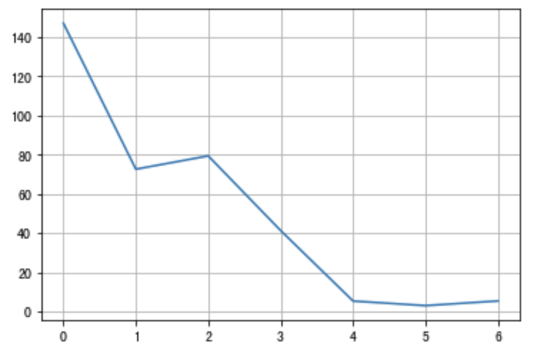</p>
<h2 id="4">4.模型测试<a class="headerlink" href="#4" title="Permanent link">&para;</a></h2>
<p>在这里我们首先加载模型，我们来看下RPN网络和fastRCNN网络的输出。</p>
<p>导入工具包</p>
<div class="highlight"><pre><span></span><code><span class="c1"># 导入数据集 VOC data</span>
<span class="kn">from</span> <span class="nn">detection.datasets</span> <span class="kn">import</span> <span class="n">pascal_voc</span>
<span class="kn">import</span> <span class="nn">numpy</span> <span class="kn">as</span> <span class="nn">np</span>
<span class="c1"># 图像展示</span>
<span class="kn">from</span> <span class="nn">matplotlib</span> <span class="kn">import</span> <span class="n">pyplot</span> <span class="k">as</span> <span class="n">plt</span>
<span class="c1"># 显示图像，及对应的标签值</span>
<span class="kn">import</span> <span class="nn">visualize</span>
<span class="c1"># 模型加载</span>
<span class="kn">from</span> <span class="nn">detection.models.detectors</span> <span class="kn">import</span> <span class="n">faster_rcnn</span>
<span class="kn">import</span> <span class="nn">tensorflow</span> <span class="kn">as</span> <span class="nn">tf</span>
<span class="kn">from</span> <span class="nn">detection.core.bbox</span> <span class="kn">import</span> <span class="n">transforms</span>
<span class="kn">from</span> <span class="nn">detection.datasets.utils</span> <span class="kn">import</span> <span class="n">get_original_image</span>
</code></pre></div>

<h3 id="41">4.1 数据和模型加载<a class="headerlink" href="#41" title="Permanent link">&para;</a></h3>
<p>首先加载要进行预测的数据和训练好的模型:</p>
<ul>
<li>数据集加载</li>
</ul>
<div class="highlight"><pre><span></span><code><span class="c1"># 数据集加载</span>
<span class="c1"># 实例化</span>
<span class="n">pascal</span> <span class="o">=</span> <span class="n">pascal_voc</span><span class="o">.</span><span class="n">pascal_voc</span><span class="p">(</span><span class="s1">&#39;train&#39;</span><span class="p">)</span>
<span class="c1"># 获取图像</span>
<span class="n">image</span><span class="p">,</span> <span class="n">image_meta</span><span class="p">,</span> <span class="n">bboxes</span><span class="p">,</span> <span class="n">labels</span> <span class="o">=</span> <span class="n">pascal</span><span class="p">[</span><span class="mi">8</span><span class="p">]</span>
<span class="c1"># 图像的均值和标准差</span>
<span class="n">img_mean</span> <span class="o">=</span> <span class="p">(</span><span class="mf">122.7717</span><span class="p">,</span> <span class="mf">115.9465</span><span class="p">,</span> <span class="mf">102.9801</span><span class="p">)</span>
<span class="n">img_std</span> <span class="o">=</span> <span class="p">(</span><span class="mf">1.</span><span class="p">,</span> <span class="mf">1.</span><span class="p">,</span> <span class="mf">1.</span><span class="p">)</span>
<span class="c1"># 获取图像，显示</span>
<span class="n">rgb_img</span> <span class="o">=</span> <span class="n">np</span><span class="o">.</span><span class="n">round</span><span class="p">(</span><span class="n">image</span> <span class="o">+</span> <span class="n">img_mean</span><span class="p">)</span><span class="o">.</span><span class="n">astype</span><span class="p">(</span><span class="n">np</span><span class="o">.</span><span class="n">uint8</span><span class="p">)</span>
<span class="n">plt</span><span class="o">.</span><span class="n">imshow</span><span class="p">(</span><span class="n">rgb_img</span><span class="p">[</span><span class="mi">0</span><span class="p">])</span>
<span class="n">plt</span><span class="o">.</span><span class="n">show</span><span class="p">()</span>
</code></pre></div>

<p>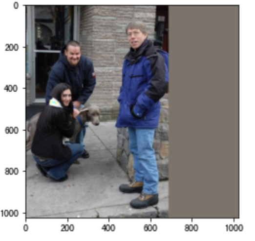</p>
<ul>
<li>模型加载</li>
</ul>
<div class="highlight"><pre><span></span><code><span class="c1"># 加载模型：模型训练是在COCO数据集中进行的，</span>
<span class="c1"># coco数据集中的类别信息</span>
<span class="n">classes</span> <span class="o">=</span> <span class="p">[</span><span class="s1">&#39;bg&#39;</span><span class="p">,</span> <span class="s1">&#39;person&#39;</span><span class="p">,</span> <span class="s1">&#39;bicycle&#39;</span><span class="p">,</span> <span class="s1">&#39;car&#39;</span><span class="p">,</span> <span class="s1">&#39;motorcycle&#39;</span><span class="p">,</span> <span class="s1">&#39;airplane&#39;</span><span class="p">,</span> <span class="s1">&#39;bus&#39;</span><span class="p">,</span> <span class="s1">&#39;train&#39;</span><span class="p">,</span> <span class="s1">&#39;truck&#39;</span><span class="p">,</span> <span class="s1">&#39;boat&#39;</span><span class="p">,</span> <span class="s1">&#39;traffic light&#39;</span><span class="p">,</span> <span class="s1">&#39;fire hydrant&#39;</span><span class="p">,</span> <span class="s1">&#39;stop sign&#39;</span><span class="p">,</span> <span class="s1">&#39;parking meter&#39;</span><span class="p">,</span> <span class="s1">&#39;bench&#39;</span><span class="p">,</span> <span class="s1">&#39;bird&#39;</span><span class="p">,</span> <span class="s1">&#39;cat&#39;</span><span class="p">,</span> <span class="s1">&#39;dog&#39;</span><span class="p">,</span> <span class="s1">&#39;horse&#39;</span><span class="p">,</span> <span class="s1">&#39;sheep&#39;</span><span class="p">,</span> <span class="s1">&#39;cow&#39;</span><span class="p">,</span> <span class="s1">&#39;elephant&#39;</span><span class="p">,</span> <span class="s1">&#39;bear&#39;</span><span class="p">,</span> <span class="s1">&#39;zebra&#39;</span><span class="p">,</span> <span class="s1">&#39;giraffe&#39;</span><span class="p">,</span> <span class="s1">&#39;backpack&#39;</span><span class="p">,</span> <span class="s1">&#39;umbrella&#39;</span><span class="p">,</span> <span class="s1">&#39;handbag&#39;</span><span class="p">,</span> <span class="s1">&#39;tie&#39;</span><span class="p">,</span> <span class="s1">&#39;suitcase&#39;</span><span class="p">,</span> <span class="s1">&#39;frisbee&#39;</span><span class="p">,</span> <span class="s1">&#39;skis&#39;</span><span class="p">,</span> <span class="s1">&#39;snowboard&#39;</span><span class="p">,</span> <span class="s1">&#39;sports ball&#39;</span><span class="p">,</span> <span class="s1">&#39;kite&#39;</span><span class="p">,</span> <span class="s1">&#39;baseball bat&#39;</span><span class="p">,</span> <span class="s1">&#39;baseball glove&#39;</span><span class="p">,</span> <span class="s1">&#39;skateboard&#39;</span><span class="p">,</span> <span class="s1">&#39;surfboard&#39;</span><span class="p">,</span> <span class="s1">&#39;tennis racket&#39;</span><span class="p">,</span> <span class="s1">&#39;bottle&#39;</span><span class="p">,</span> <span class="s1">&#39;wine glass&#39;</span><span class="p">,</span> <span class="s1">&#39;cup&#39;</span><span class="p">,</span> <span class="s1">&#39;fork&#39;</span><span class="p">,</span> <span class="s1">&#39;knife&#39;</span><span class="p">,</span> <span class="s1">&#39;spoon&#39;</span><span class="p">,</span> <span class="s1">&#39;bowl&#39;</span><span class="p">,</span> <span class="s1">&#39;banana&#39;</span><span class="p">,</span> <span class="s1">&#39;apple&#39;</span><span class="p">,</span> <span class="s1">&#39;sandwich&#39;</span><span class="p">,</span> <span class="s1">&#39;orange&#39;</span><span class="p">,</span> <span class="s1">&#39;broccoli&#39;</span><span class="p">,</span> <span class="s1">&#39;carrot&#39;</span><span class="p">,</span> <span class="s1">&#39;hot dog&#39;</span><span class="p">,</span> <span class="s1">&#39;pizza&#39;</span><span class="p">,</span> <span class="s1">&#39;donut&#39;</span><span class="p">,</span> <span class="s1">&#39;cake&#39;</span><span class="p">,</span> <span class="s1">&#39;chair&#39;</span><span class="p">,</span> <span class="s1">&#39;couch&#39;</span><span class="p">,</span> <span class="s1">&#39;potted plant&#39;</span><span class="p">,</span> <span class="s1">&#39;bed&#39;</span><span class="p">,</span> <span class="s1">&#39;dining table&#39;</span><span class="p">,</span> <span class="s1">&#39;toilet&#39;</span><span class="p">,</span> <span class="s1">&#39;tv&#39;</span><span class="p">,</span> <span class="s1">&#39;laptop&#39;</span><span class="p">,</span> <span class="s1">&#39;mouse&#39;</span><span class="p">,</span> <span class="s1">&#39;remote&#39;</span><span class="p">,</span> <span class="s1">&#39;keyboard&#39;</span><span class="p">,</span> <span class="s1">&#39;cell phone&#39;</span><span class="p">,</span> <span class="s1">&#39;microwave&#39;</span><span class="p">,</span> <span class="s1">&#39;oven&#39;</span><span class="p">,</span> <span class="s1">&#39;toaster&#39;</span><span class="p">,</span> <span class="s1">&#39;sink&#39;</span><span class="p">,</span> <span class="s1">&#39;refrigerator&#39;</span><span class="p">,</span> <span class="s1">&#39;book&#39;</span><span class="p">,</span> <span class="s1">&#39;clock&#39;</span><span class="p">,</span> <span class="s1">&#39;vase&#39;</span><span class="p">,</span> <span class="s1">&#39;scissors&#39;</span><span class="p">,</span> <span class="s1">&#39;teddy bear&#39;</span><span class="p">,</span> <span class="s1">&#39;hair drier&#39;</span><span class="p">,</span> <span class="s1">&#39;toothbrush&#39;</span><span class="p">]</span>
<span class="c1"># 模型加载</span>
<span class="n">model</span> <span class="o">=</span> <span class="n">faster_rcnn</span><span class="o">.</span><span class="n">FasterRCNN</span><span class="p">(</span><span class="n">num_classes</span><span class="o">=</span><span class="nb">len</span><span class="p">(</span><span class="n">classes</span><span class="p">))</span>
<span class="c1"># 将数据送入到网络中</span>
<span class="n">_</span> <span class="o">=</span> <span class="n">model</span><span class="p">((</span><span class="n">image</span><span class="p">,</span> <span class="n">image_meta</span><span class="p">,</span> <span class="n">bboxes</span><span class="p">,</span> <span class="n">labels</span><span class="p">),</span> <span class="n">training</span><span class="o">=</span><span class="bp">True</span><span class="p">)</span>
<span class="c1"># 加载已训练好的权重</span>
<span class="n">model</span><span class="o">.</span><span class="n">load_weights</span><span class="p">(</span><span class="s1">&#39;weights/faster_rcnn.h5&#39;</span><span class="p">)</span>
</code></pre></div>

<p>接下来，我们来看下RPN网络和fastRCNN的输出。</p>
<h3 id="42-rpn">4.2 RPN网络<a class="headerlink" href="#42-rpn" title="Permanent link">&para;</a></h3>
<h4 id="421-rpn">4.2.1 RPN的目标值<a class="headerlink" href="#421-rpn" title="Permanent link">&para;</a></h4>
<ul>
<li>获取图像的anchor,并匹配目标值</li>
</ul>
<div class="highlight"><pre><span></span><code><span class="c1"># 根据图像信息产生anchor</span>
<span class="n">anchors</span><span class="p">,</span> <span class="n">valid_flags</span> <span class="o">=</span> <span class="n">model</span><span class="o">.</span><span class="n">rpn_head</span><span class="o">.</span><span class="n">generator</span><span class="o">.</span><span class="n">generate_pyramid_anchors</span><span class="p">(</span><span class="n">image_meta</span><span class="p">)</span>
<span class="c1"># 并设置anchor对应的目标值</span>
<span class="n">rpn_target_matchs</span><span class="p">,</span> <span class="n">rpn_target_deltas</span> <span class="o">=</span> <span class="n">model</span><span class="o">.</span><span class="n">rpn_head</span><span class="o">.</span><span class="n">anchor_target</span><span class="o">.</span><span class="n">build_targets</span><span class="p">(</span>
                <span class="n">anchors</span><span class="p">,</span> <span class="n">valid_flags</span><span class="p">,</span> <span class="n">bboxes</span><span class="p">,</span> <span class="n">labels</span><span class="p">)</span>
</code></pre></div>

<ul>
<li>获取正负样本，及正样本的回归值</li>
</ul>
<div class="highlight"><pre><span></span><code><span class="c1"># 获取正样本</span>
<span class="n">positive_anchors</span> <span class="o">=</span> <span class="n">tf</span><span class="o">.</span><span class="n">gather</span><span class="p">(</span><span class="n">anchors</span><span class="p">,</span> <span class="n">tf</span><span class="o">.</span><span class="n">where</span><span class="p">(</span><span class="n">tf</span><span class="o">.</span><span class="n">equal</span><span class="p">(</span><span class="n">rpn_target_matchs</span><span class="p">,</span> <span class="mi">1</span><span class="p">))[:,</span> <span class="mi">1</span><span class="p">])</span>
<span class="c1"># 获取负样本</span>
<span class="n">negative_anchors</span> <span class="o">=</span> <span class="n">tf</span><span class="o">.</span><span class="n">gather</span><span class="p">(</span><span class="n">anchors</span><span class="p">,</span> <span class="n">tf</span><span class="o">.</span><span class="n">where</span><span class="p">(</span><span class="n">tf</span><span class="o">.</span><span class="n">equal</span><span class="p">(</span><span class="n">rpn_target_matchs</span><span class="p">,</span> <span class="o">-</span><span class="mi">1</span><span class="p">))[:,</span> <span class="mi">1</span><span class="p">])</span>
<span class="c1"># 获取非正非负样本</span>
<span class="n">neutral_anchors</span> <span class="o">=</span> <span class="n">tf</span><span class="o">.</span><span class="n">gather</span><span class="p">(</span><span class="n">anchors</span><span class="p">,</span> <span class="n">tf</span><span class="o">.</span><span class="n">where</span><span class="p">(</span><span class="n">tf</span><span class="o">.</span><span class="n">equal</span><span class="p">(</span><span class="n">rpn_target_matchs</span><span class="p">,</span> <span class="mi">0</span><span class="p">))[:,</span> <span class="mi">1</span><span class="p">])</span>
<span class="c1"># 获取正样本的回归值</span>
<span class="n">positive_target_deltas</span> <span class="o">=</span> <span class="n">rpn_target_deltas</span><span class="p">[</span><span class="mi">0</span><span class="p">,</span> <span class="p">:</span><span class="n">tf</span><span class="o">.</span><span class="n">where</span><span class="p">(</span><span class="n">tf</span><span class="o">.</span><span class="n">equal</span><span class="p">(</span><span class="n">rpn_target_matchs</span><span class="p">,</span> <span class="mi">1</span><span class="p">))</span><span class="o">.</span><span class="n">shape</span><span class="p">[</span><span class="mi">0</span><span class="p">]]</span>
<span class="c1"># 获取anchor修正的目标值    </span>
<span class="n">refined_anchors</span> <span class="o">=</span> <span class="n">transforms</span><span class="o">.</span><span class="n">delta2bbox</span><span class="p">(</span>
    <span class="n">positive_anchors</span><span class="p">,</span> <span class="n">positive_target_deltas</span><span class="p">,</span> <span class="p">(</span><span class="mf">0.</span><span class="p">,</span> <span class="mf">0.</span><span class="p">,</span> <span class="mf">0.</span><span class="p">,</span> <span class="mf">0.</span><span class="p">),</span> <span class="p">(</span><span class="mf">0.1</span><span class="p">,</span> <span class="mf">0.1</span><span class="p">,</span> <span class="mf">0.2</span><span class="p">,</span> <span class="mf">0.2</span><span class="p">))</span>
</code></pre></div>

<ul>
<li>正负样本的结果</li>
</ul>
<div class="highlight"><pre><span></span><code><span class="c1"># 正负样本的个数</span>
<span class="k">print</span><span class="p">(</span><span class="s1">&#39;rpn_target_matchs:</span><span class="se">\t</span><span class="s1">&#39;</span><span class="p">,</span> <span class="n">rpn_target_matchs</span><span class="p">[</span><span class="mi">0</span><span class="p">]</span><span class="o">.</span><span class="n">shape</span><span class="o">.</span><span class="n">as_list</span><span class="p">())</span>
<span class="k">print</span><span class="p">(</span><span class="s1">&#39;rpn_target_deltas:</span><span class="se">\t</span><span class="s1">&#39;</span><span class="p">,</span> <span class="n">rpn_target_deltas</span><span class="p">[</span><span class="mi">0</span><span class="p">]</span><span class="o">.</span><span class="n">shape</span><span class="o">.</span><span class="n">as_list</span><span class="p">())</span>
<span class="k">print</span><span class="p">(</span><span class="s1">&#39;positive_anchors:</span><span class="se">\t</span><span class="s1">&#39;</span><span class="p">,</span> <span class="n">positive_anchors</span><span class="o">.</span><span class="n">shape</span><span class="o">.</span><span class="n">as_list</span><span class="p">())</span>
<span class="k">print</span><span class="p">(</span><span class="s1">&#39;negative_anchors:</span><span class="se">\t</span><span class="s1">&#39;</span><span class="p">,</span> <span class="n">negative_anchors</span><span class="o">.</span><span class="n">shape</span><span class="o">.</span><span class="n">as_list</span><span class="p">())</span>
<span class="k">print</span><span class="p">(</span><span class="s1">&#39;neutral_anchors:</span><span class="se">\t</span><span class="s1">&#39;</span><span class="p">,</span> <span class="n">neutral_anchors</span><span class="o">.</span><span class="n">shape</span><span class="o">.</span><span class="n">as_list</span><span class="p">())</span>
<span class="k">print</span><span class="p">(</span><span class="s1">&#39;refined_anchors:</span><span class="se">\t</span><span class="s1">&#39;</span><span class="p">,</span> <span class="n">refined_anchors</span><span class="o">.</span><span class="n">shape</span><span class="o">.</span><span class="n">as_list</span><span class="p">()</span>
</code></pre></div>

<div class="highlight"><pre><span></span><code><span class="n">rpn_target_matchs</span><span class="p">:</span>   <span class="p">[</span><span class="mi">261888</span><span class="p">]</span>
<span class="n">rpn_target_deltas</span><span class="p">:</span>   <span class="p">[</span><span class="mi">256</span><span class="p">,</span> <span class="mi">4</span><span class="p">]</span>
<span class="n">positive_anchors</span><span class="p">:</span>    <span class="p">[</span><span class="mi">4</span><span class="p">,</span> <span class="mi">4</span><span class="p">]</span>
<span class="n">negative_anchors</span><span class="p">:</span>    <span class="p">[</span><span class="mi">252</span><span class="p">,</span> <span class="mi">4</span><span class="p">]</span>
<span class="n">neutral_anchors</span><span class="p">:</span>     <span class="p">[</span><span class="mi">261632</span><span class="p">,</span> <span class="mi">4</span><span class="p">]</span>
<span class="n">refined_anchors</span><span class="p">:</span>     <span class="p">[</span><span class="mi">4</span><span class="p">,</span> <span class="mi">4</span><span class="p">]</span>
</code></pre></div>

<ul>
<li>将正样本绘制在图像上</li>
</ul>
<div class="highlight"><pre><span></span><code><span class="c1"># 将正样本的anchor显示在图像上</span>
<span class="n">visualize</span><span class="o">.</span><span class="n">draw_boxes</span><span class="p">(</span><span class="n">rgb_img</span><span class="p">[</span><span class="mi">0</span><span class="p">],</span> 
                     <span class="n">boxes</span><span class="o">=</span><span class="n">positive_anchors</span><span class="o">.</span><span class="n">numpy</span><span class="p">(),</span> 
                     <span class="n">refined_boxes</span><span class="o">=</span><span class="n">refined_anchors</span><span class="o">.</span><span class="n">numpy</span><span class="p">())</span>
<span class="n">plt</span><span class="o">.</span><span class="n">show</span><span class="p">()</span>
</code></pre></div>

<p></p>
<h4 id="422-rpn">4.2.2 RPN的预测结果<a class="headerlink" href="#422-rpn" title="Permanent link">&para;</a></h4>
<ul>
<li>将图像送入网络中获取预测结果</li>
</ul>
<div class="highlight"><pre><span></span><code><span class="c1"># 不可训练</span>
<span class="n">training</span> <span class="o">=</span> <span class="bp">False</span>
<span class="c1"># 获取backbone提取的特征结果</span>
<span class="n">C2</span><span class="p">,</span> <span class="n">C3</span><span class="p">,</span> <span class="n">C4</span><span class="p">,</span> <span class="n">C5</span> <span class="o">=</span> <span class="n">model</span><span class="o">.</span><span class="n">backbone</span><span class="p">(</span><span class="n">image</span><span class="p">,</span> 
                                <span class="n">training</span><span class="o">=</span><span class="n">training</span><span class="p">)</span>
<span class="c1"># 获取fcn的特征结果</span>
<span class="n">P2</span><span class="p">,</span> <span class="n">P3</span><span class="p">,</span> <span class="n">P4</span><span class="p">,</span> <span class="n">P5</span><span class="p">,</span> <span class="n">P6</span> <span class="o">=</span> <span class="n">model</span><span class="o">.</span><span class="n">neck</span><span class="p">([</span><span class="n">C2</span><span class="p">,</span> <span class="n">C3</span><span class="p">,</span> <span class="n">C4</span><span class="p">,</span> <span class="n">C5</span><span class="p">],</span> 
                                <span class="n">training</span><span class="o">=</span><span class="n">training</span><span class="p">)</span>
</code></pre></div>

<ul>
<li>获取送入到RPN网络中的特征图，并送入RPN网络中</li>
</ul>
<div class="highlight"><pre><span></span><code><span class="c1"># 获取特征图</span>
<span class="n">rpn_feature_maps</span> <span class="o">=</span> <span class="p">[</span><span class="n">P2</span><span class="p">,</span> <span class="n">P3</span><span class="p">,</span> <span class="n">P4</span><span class="p">,</span> <span class="n">P5</span><span class="p">,</span> <span class="n">P6</span><span class="p">]</span>
<span class="c1"># 获取RPN的预测结果:分类和回归结果</span>
<span class="n">rpn_class_logits</span><span class="p">,</span> <span class="n">rpn_probs</span><span class="p">,</span> <span class="n">rpn_deltas</span> <span class="o">=</span> <span class="n">model</span><span class="o">.</span><span class="n">rpn_head</span><span class="p">(</span>
    <span class="n">rpn_feature_maps</span><span class="p">,</span> <span class="n">training</span><span class="o">=</span><span class="n">training</span><span class="p">)</span>
</code></pre></div>

<ul>
<li>将置信度较高的anchor显示在图像上</li>
</ul>
<div class="highlight"><pre><span></span><code><span class="c1"># [batch_size, num_anchors, (bg prob, fg prob)]  rpn的分类结果，在这里我们去第一个batch,所有anchor前景的概率</span>
<span class="n">rpn_probs_tmp</span> <span class="o">=</span> <span class="n">rpn_probs</span><span class="p">[</span><span class="mi">0</span><span class="p">,</span> <span class="p">:,</span> <span class="mi">1</span><span class="p">]</span>
<span class="c1"># 将置信度top100的绘制在图像上</span>
<span class="n">limit</span> <span class="o">=</span> <span class="mi">100</span>
<span class="n">ix</span> <span class="o">=</span> <span class="n">tf</span><span class="o">.</span><span class="n">nn</span><span class="o">.</span><span class="n">top_k</span><span class="p">(</span><span class="n">rpn_probs_tmp</span><span class="p">,</span> <span class="n">k</span><span class="o">=</span><span class="n">limit</span><span class="p">)</span><span class="o">.</span><span class="n">indices</span><span class="p">[::</span><span class="o">-</span><span class="mi">1</span><span class="p">]</span>
<span class="c1"># 绘制在图像上</span>
<span class="n">visualize</span><span class="o">.</span><span class="n">draw_boxes</span><span class="p">(</span><span class="n">rgb_img</span><span class="p">[</span><span class="mi">0</span><span class="p">],</span> <span class="n">boxes</span><span class="o">=</span><span class="n">tf</span><span class="o">.</span><span class="n">gather</span><span class="p">(</span><span class="n">anchors</span><span class="p">,</span> <span class="n">ix</span><span class="p">)</span><span class="o">.</span><span class="n">numpy</span><span class="p">())</span>
</code></pre></div>

<p>结果如下所示：</p>
<p>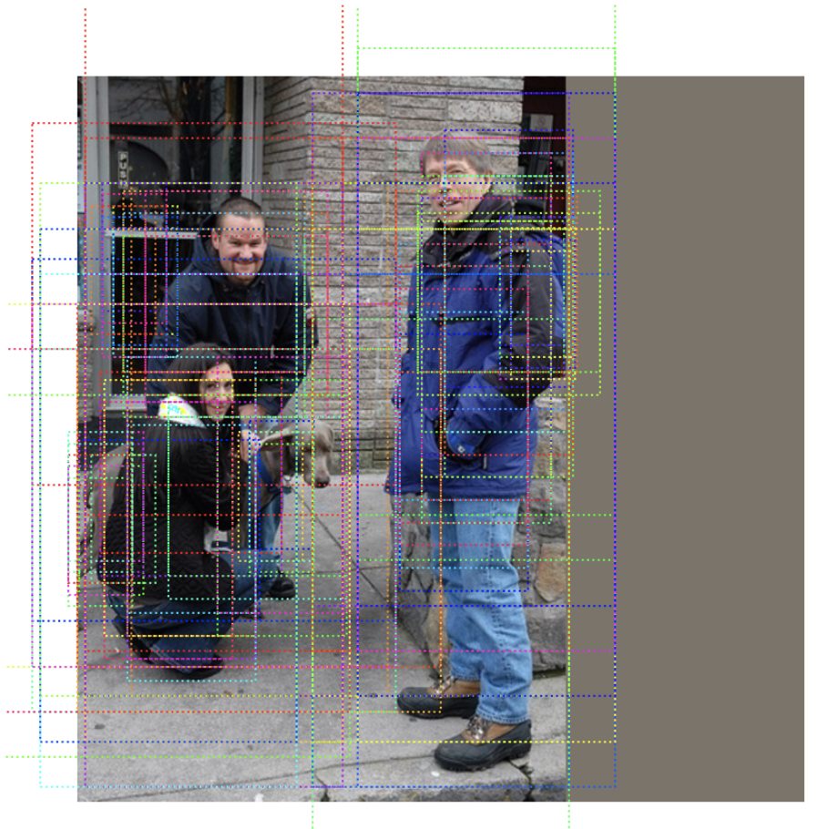</p>
<h3 id="43-fastrcnn">4.3 fastRCNN网络<a class="headerlink" href="#43-fastrcnn" title="Permanent link">&para;</a></h3>
<p>将RPN的结果送入到后续网络中，进行检测：</p>
<ul>
<li>获取候选区域</li>
</ul>
<div class="highlight"><pre><span></span><code><span class="c1"># 候选区域</span>
<span class="n">proposals_list</span> <span class="o">=</span> <span class="n">model</span><span class="o">.</span><span class="n">rpn_head</span><span class="o">.</span><span class="n">get_proposals</span><span class="p">(</span>
    <span class="n">rpn_probs</span><span class="p">,</span> <span class="n">rpn_deltas</span><span class="p">,</span> <span class="n">image_meta</span><span class="p">)</span>
</code></pre></div>

<ul>
<li>进行ROIPooling</li>
</ul>
<div class="highlight"><pre><span></span><code><span class="n">rois_list</span> <span class="o">=</span> <span class="n">proposals_list</span>
<span class="c1"># roipooling</span>
<span class="n">pooled_regions_list</span> <span class="o">=</span> <span class="n">model</span><span class="o">.</span><span class="n">roi_align</span><span class="p">(</span>
    <span class="p">(</span><span class="n">rois_list</span><span class="p">,</span> <span class="n">rcnn_feature_maps</span><span class="p">,</span> <span class="n">image_meta</span><span class="p">),</span> <span class="n">training</span><span class="o">=</span><span class="n">training</span><span class="p">)</span>
</code></pre></div>

<ul>
<li>预测</li>
</ul>
<div class="highlight"><pre><span></span><code><span class="c1"># 进行预测</span>
<span class="n">rcnn_class_logits_list</span><span class="p">,</span> <span class="n">rcnn_probs_list</span><span class="p">,</span> <span class="n">rcnn_deltas_list</span> <span class="o">=</span> \
    <span class="n">model</span><span class="o">.</span><span class="n">bbox_head</span><span class="p">(</span><span class="n">pooled_regions_list</span><span class="p">,</span> <span class="n">training</span><span class="o">=</span><span class="n">training</span><span class="p">)</span>
</code></pre></div>

<ul>
<li>获取预测结果</li>
</ul>
<div class="highlight"><pre><span></span><code><span class="c1"># 获取预测结果</span>
<span class="n">detections_list</span> <span class="o">=</span> <span class="n">model</span><span class="o">.</span><span class="n">bbox_head</span><span class="o">.</span><span class="n">get_bboxes</span><span class="p">(</span>
    <span class="n">rcnn_probs_list</span><span class="p">,</span> <span class="n">rcnn_deltas_list</span><span class="p">,</span> <span class="n">rois_list</span><span class="p">,</span> <span class="n">image_meta</span><span class="p">)</span>
</code></pre></div>

<ul>
<li>获取预测结果的坐标，并绘制在图像上</li>
</ul>
<div class="highlight"><pre><span></span><code><span class="c1"># 获得坐标值</span>
<span class="n">tmp</span> <span class="o">=</span> <span class="n">detections_list</span><span class="p">[</span><span class="mi">0</span><span class="p">][:,</span> <span class="p">:</span><span class="mi">4</span><span class="p">]</span>
<span class="c1"># 将检测检测的框绘制在图像上</span>
<span class="n">visualize</span><span class="o">.</span><span class="n">draw_boxes</span><span class="p">(</span><span class="n">rgb_img</span><span class="p">[</span><span class="mi">0</span><span class="p">],</span> <span class="n">boxes</span><span class="o">=</span><span class="n">tmp</span><span class="o">.</span><span class="n">numpy</span><span class="p">())</span>
</code></pre></div>

<p>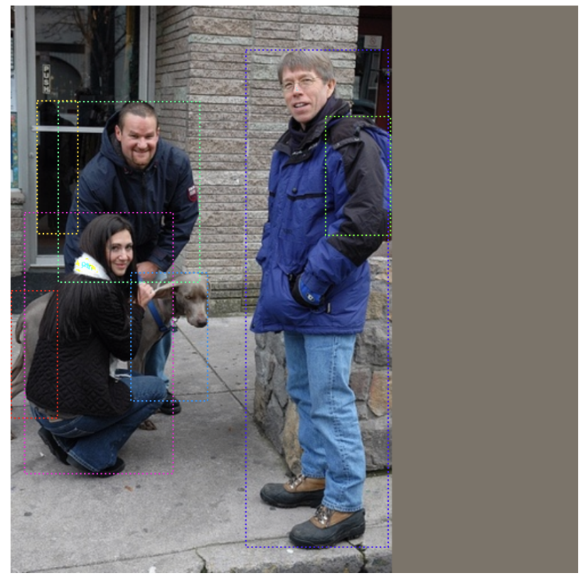</p>
<h3 id="44">4.4 目标检测<a class="headerlink" href="#44" title="Permanent link">&para;</a></h3>
<p>上述我们是分步进行预测，我们也可以直接在原图像上进行预测：</p>
<div class="highlight"><pre><span></span><code><span class="c1"># 获取原图像</span>
<span class="n">ori_img</span> <span class="o">=</span> <span class="n">get_original_image</span><span class="p">(</span><span class="n">image</span><span class="p">[</span><span class="mi">0</span><span class="p">],</span> <span class="n">image_meta</span><span class="p">[</span><span class="mi">0</span><span class="p">],</span> <span class="n">img_mean</span><span class="p">)</span>
<span class="c1"># 获取候选区域</span>
<span class="n">proposals</span> <span class="o">=</span> <span class="n">model</span><span class="o">.</span><span class="n">simple_test_rpn</span><span class="p">(</span><span class="n">image</span><span class="p">[</span><span class="mi">0</span><span class="p">],</span> <span class="n">image_meta</span><span class="p">[</span><span class="mi">0</span><span class="p">])</span>
<span class="c1"># 检测结果</span>
<span class="n">res</span> <span class="o">=</span> <span class="n">model</span><span class="o">.</span><span class="n">simple_test_bboxes</span><span class="p">(</span><span class="n">image</span><span class="p">[</span><span class="mi">0</span><span class="p">],</span> <span class="n">image_meta</span><span class="p">[</span><span class="mi">0</span><span class="p">],</span> <span class="n">proposals</span><span class="p">)</span>
<span class="c1"># 将检测结果绘制在图像上</span>
<span class="n">visualize</span><span class="o">.</span><span class="n">display_instances</span><span class="p">(</span><span class="n">ori_img</span><span class="p">,</span> <span class="n">res</span><span class="p">[</span><span class="s1">&#39;rois&#39;</span><span class="p">],</span> <span class="n">res</span><span class="p">[</span><span class="s1">&#39;class_ids&#39;</span><span class="p">],</span> 
                            <span class="n">classes</span><span class="p">,</span> <span class="n">scores</span><span class="o">=</span><span class="n">res</span><span class="p">[</span><span class="s1">&#39;scores&#39;</span><span class="p">])</span>
</code></pre></div>

<p>最终的检测结果为：</p>
<p>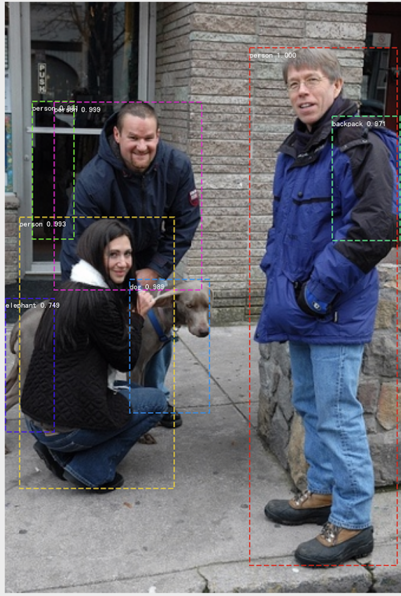</p>
<hr />
<p><strong>总结</strong></p>
<ul>
<li>了解VOC数据集的应用理解</li>
</ul>
<p>Pascal VOC数据集作为基准数据，在目标检测中常被使用到</p>
<ul>
<li>fasterRCNN模型的构成</li>
</ul>
<p>主要有RPN网络进行候选区域的的生成，然后使用fastRCNN网络进行预测</p>
<ul>
<li>能够利用fasterRCNN网络模型进行训练和预测</li>
</ul>
                
              
              
                


              
            </article>
          </div>
        </div>
      </main>
      
        
<footer class="md-footer">
  
    <div class="md-footer-nav">
      <nav class="md-footer-nav__inner md-grid" aria-label="Footer">
        
          <a href="../02.RCNN/" title="RCNN系列网络" class="md-footer-nav__link md-footer-nav__link--prev" rel="prev">
            <div class="md-footer-nav__button md-icon">
              <svg xmlns="http://www.w3.org/2000/svg" viewBox="0 0 24 24"><path d="M20 11v2H8l5.5 5.5-1.42 1.42L4.16 12l7.92-7.92L13.5 5.5 8 11h12z"/></svg>
            </div>
            <div class="md-footer-nav__title">
              <div class="md-ellipsis">
                <span class="md-footer-nav__direction">
                  Previous
                </span>
                RCNN系列网络
              </div>
            </div>
          </a>
        
        
          <a href="../04.yolo/" title="YOLO系列算法" class="md-footer-nav__link md-footer-nav__link--next" rel="next">
            <div class="md-footer-nav__title">
              <div class="md-ellipsis">
                <span class="md-footer-nav__direction">
                  Next
                </span>
                YOLO系列算法
              </div>
            </div>
            <div class="md-footer-nav__button md-icon">
              <svg xmlns="http://www.w3.org/2000/svg" viewBox="0 0 24 24"><path d="M4 11v2h12l-5.5 5.5 1.42 1.42L19.84 12l-7.92-7.92L10.5 5.5 16 11H4z"/></svg>
            </div>
          </a>
        
      </nav>
    </div>
  
  <div class="md-footer-meta md-typeset">
    <div class="md-footer-meta__inner md-grid">
      <div class="md-footer-copyright">
        
        Made with
        <a href="https://squidfunk.github.io/mkdocs-material/" target="_blank" rel="noopener">
          Material for MkDocs
        </a>
      </div>
      
    </div>
  </div>
</footer>
      
    </div>
    
      <script src="../../assets/javascripts/vendor.d710d30a.min.js"></script>
      <script src="../../assets/javascripts/bundle.a45f732b.min.js"></script><script id="__lang" type="application/json">{"clipboard.copy": "Copy to clipboard", "clipboard.copied": "Copied to clipboard", "search.config.lang": "en", "search.config.pipeline": "trimmer, stopWordFilter", "search.config.separator": "[\\s\\-]+", "search.result.placeholder": "Type to start searching", "search.result.none": "No matching documents", "search.result.one": "1 matching document", "search.result.other": "# matching documents"}</script>
      
      <script>
        app = initialize({
          base: "../..",
          features: [],
          search: Object.assign({
            worker: "../../assets/javascripts/worker/search.c03f0417.min.js"
          }, typeof search !== "undefined" && search)
        })
      </script>
      
        <script src="../../js/extra.js"></script>
      
        <script src="https://cdnjs.cloudflare.com/ajax/libs/mathjax/2.7.0/MathJax.js?config=TeX-MML-AM_CHTML"></script>
      
    
  </body>
</html>